3.1. 创建设备
获取设备有多种方法。 如果您需要同时使用多个设备，建议采用方法一、方法二或方法三。 如果您仅处理单个设备，建议使用方法四来访问该设备。
// 创建 Context
ob::Context ctx;
// 方法一
// 通过 Context 枚举所有已连接的设备。
std::shared_ptr<DeviceList> devices = ctx.queryDeviceList();
// 获取索引为 0 的设备。
auto device = devices->getDevice(0);
// 方法二
// 通过 Context 枚举所有已连接的设备。
std::shared_ptr<DeviceList> devices = ctx.queryDeviceList();
// 通过序列号获取设备。
auto device = devices->getDeviceBySN("AE4M73D0040");
// 方法三
// 通过 Context 枚举所有已连接的设备。
std::shared_ptr<DeviceList> devices = ctx.queryDeviceList();
// 通过 UID 获取设备。
auto device = devices->getDeviceByUid("NDSG3958LKHY45");
// 方法四
ob::Pipeline pipe;
// 通过 Pipeline 获取设备。
auto device = pipe.getDevice();
3.2. 创建 Pipeline
创建 Pipeline 有两种方法。 如果您需要同时使用多个设备，请使用方法二，为每台设备创建独立的 Pipeline。 对于单设备场景，方法一是创建 Pipeline 最直接的方式。
// 方法一
ob::Pipeline pipe;
// 方法二，基于设备创建
auto pipe = std::make_shared<ob::Pipeline>(device);
3.3. 获取传感器列表
先从设备获取传感器列表，然后从中查询所支持的传感器类型。
// 1.使用默认设备创建 Pipeline。
ob::Pipeline pipe;
// 2.通过 Pipeline 获取设备。
std::shared_ptr<ob::Device> device = pipe.getDevice();
// 3.通过设备获取传感器列表。
std::shared_ptr<ob::SensorList> sensorList = device->getSensorList();
// 4.为 Pipeline 创建 config。
std::shared_ptr<ob::Config> config = std::make_shared<ob::Config>();
// 5.查询所有支持的传感器类型。
for(uint32_t index = 0; index < sensorList->getCount(); index++) {
OBSensorType sensorType = sensorList->getSensorType(index);
std::cout << "Supported Sensor type: \n" << sensorType;
}
3.4. 获取视频数据流
常见的数据流包括深度流、左红外、右红外以及彩色流。 以深度流为例，其分辨率设置为 640×400，帧率为 15 fps，输出格式为 Y16。 IR和彩色数据流的处理流程与此类似。
阻塞轮询模式与异步回调模式的区别：在阻塞轮询模式下，Pipeline 完成帧汇聚后会将帧插入队列，应用程序调用 waitForFrameset 从队列中获取帧数据。在异步回调模式下，帧汇聚完成后，帧会通过回调直接传递回应用程序。异步回调模式的优势在于实时性更强，但在回调函数中，应用层应避免执行耗时任务，并尽快释放该帧。
3.4.1. 阻塞轮询模式
工作流程如下图：
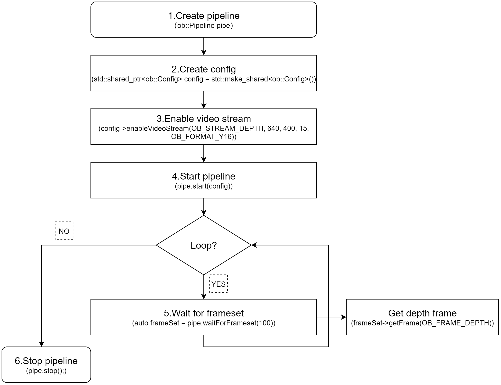
关键 API 描述：
// 1.使用默认设备创建 Pipeline。
ob::Pipeline pipe;
// 2.创建 config。
std::shared_ptr<ob::Config> config = std::make_shared<ob::Config>();
// 3.启用视频数据流。您可以根据使用需求修改相关参数。
config->enableVideoStream(OB_STREAM_DEPTH, 640, 400, 15, OB_FORMAT_Y16);
// 4.使用 config 启动 Pipeline。
pipe.start(config);
while(true) {
// 5.在阻塞模式下，等待帧集，最多等待 100ms。
auto frameSet = pipe.waitForFrameset(100);
if(frameSet == nullptr) {
continue;
}
// 获取深度帧。
auto depthFrameRaw = frameSet->getFrame(OB_FRAME_DEPTH);
if(depthFrameRaw) {
// 通过 depthFrame 获取深度帧，处理深度数据。
auto depthFrame = depthFrameRaw->as<ob::DepthFrame>();
uint32_t width = depthFrame->getWidth();
uint32_t height = depthFrame->getHeight();
const uint16_t *data = reinterpret_cast<const uint16_t *>(depthFrame->getData());
}
}
// 6.停止 Pipeline。
pipe.stop();
3.4.2. 异步回调模式
工作流程如下图：
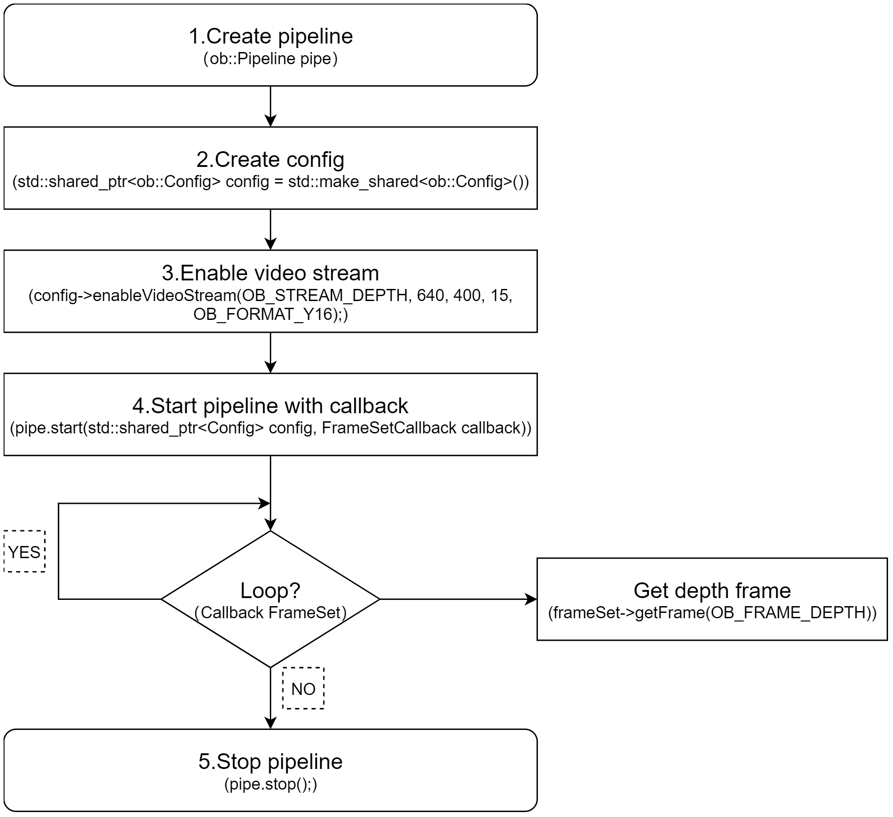
关键 API 描述：
// 1.使用默认设备创建 Pipeline。
ob::Pipeline pipe;
// 2.创建 config。
std::shared_ptr<ob::Config> config = std::make_shared<ob::Config>();
// 3.启用视频数据流。您可以根据使用需求修改相关参数。
config->enableVideoStream(OB_STREAM_DEPTH, 640, 400, 15, OB_FORMAT_Y16);
// 4.使用 config 和回调函数启动 Pipeline。
pipe.start(config, [&](std::shared_ptr<ob::FrameSet> frameSet) {
// 获取深度帧。
auto depthFrameRaw = frameSet->getFrame(OB_FRAME_DEPTH);
if(depthFrameRaw) {
// 通过 depthFrame 获取深度帧，处理深度数据。
auto depthFrame = depthFrameRaw->as<ob::DepthFrame>();
uint32_t width = depthFrame->getWidth();
uint32_t height = depthFrame->getHeight();
const uint16_t *data = reinterpret_cast<const uint16_t *>(depthFrame->getData());
}
});
// 5.停止 Pipeline。
pipe.stop();
3.5. 获取 IMU 数据流
3.5.1. 阻塞轮询模式
工作流程如下图：
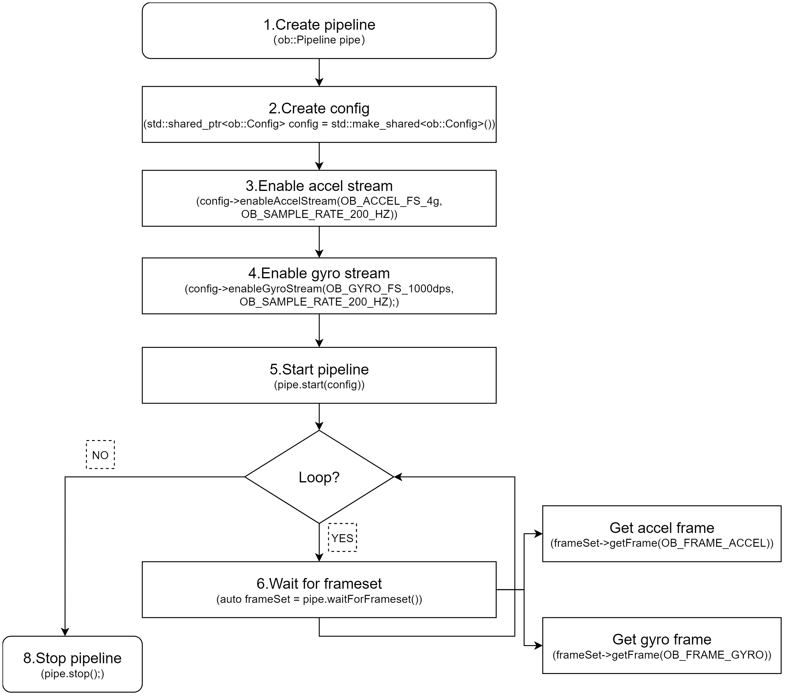
关键 API 描述：
// 1.使用默认设备创建 Pipeline。
ob::Pipeline pipe;
// 2.创建 config。
std::shared_ptr<ob::Config> config = std::make_shared<ob::Config>();
// 3.启用加速度计数据流。您可以根据使用需求修改相关参数。
config->enableAccelStream(OB_ACCEL_FS_4g, OB_SAMPLE_RATE_200_HZ);
// 4.启用陀螺仪数据流。您可以根据使用需求修改相关参数。
config->enableGyroStream(OB_GYRO_FS_1000dps, OB_SAMPLE_RATE_200_HZ);
// 5.使用 config 启动 Pipeline。
pipe.start(config);
while(true) {
// 6.在阻塞模式下，等待帧集，最多等待 100ms。
auto frameSet = pipe.waitForFrameset();
if(frameSet == nullptr) {
continue;
}
auto accelFrameRaw = frameSet->getFrame(OB_FRAME_ACCEL);
auto gyroFrameRaw = frameSet->getFrame(OB_FRAME_GYRO);
}
// 7.停止 Pipeline。
pipe.stop();
3.5.2. 异步回调模式
工作流程如下图：
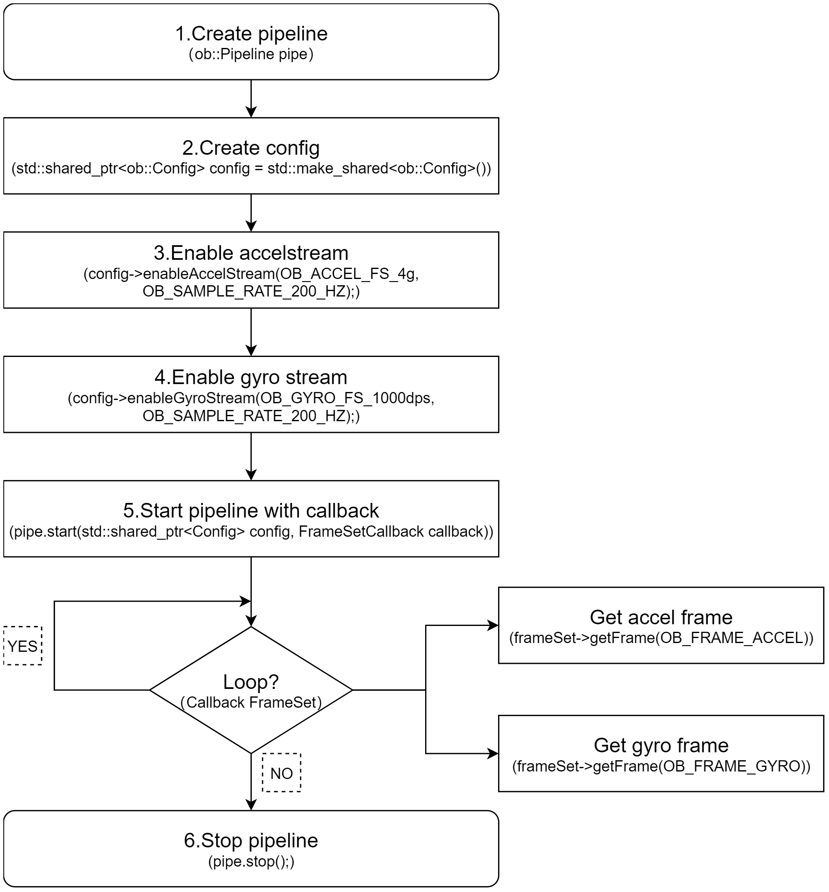
关键 API 描述：
// 1.使用默认设备创建 Pipeline。
ob::Pipeline pipe;
// 2.创建 config。
std::shared_ptr<ob::Config> config = std::make_shared<ob::Config>();
// 3.启用加速度计数据流。您可以根据使用需求修改相关参数。
config->enableAccelStream(OB_ACCEL_FS_4g, OB_SAMPLE_RATE_200_HZ);
// 4.启用陀螺仪数据流。您可以根据使用需求修改相关参数。
config->enableGyroStream(OB_GYRO_FS_1000dps, OB_SAMPLE_RATE_200_HZ);
// 5.使用 config 和回调函数启动 Pipeline。
pipe.start(config, [&](std::shared_ptr<ob::FrameSet> frameSet) {
if(frameSet != nullptr) {
auto accelFrameRaw = frameSet->getFrame(OB_FRAME_ACCEL);
auto gyroFrameRaw = frameSet->getFrame(OB_FRAME_GYRO);
}
});
// 6.停止 Pipeline。
pipe.stop();
3.6. 帧汇聚
帧汇聚功能用于配置帧数据流的输出模式。该功能可通过 ob::Config 提供的接口设置。 帧汇聚共有四种模式。
关键 API 描述：
// 通过 ob::Config 提供的接口设置。
void setFrameAggregateOutputMode(OBFrameAggregateOutputMode mode);
// 帧汇聚包含的模式如下：
typedef enum {
/**
* @brief 仅输出包含所有类型数据帧的 FrameSet。
*/
OB_FRAME_AGGREGATE_OUTPUT_ALL_TYPE_FRAME_REQUIRE = 0,
/**
* @brief 要求输出彩色帧的模式。
* @brief 适用于彩色流使用 H264、H265 等帧间编码格式的场景。
* @attention 在该模式下，从 FrameSet 中获取非彩色类型数据帧时，可能返回 null。
*/
OB_FRAME_AGGREGATE_OUTPUT_COLOR_FRAME_REQUIRE,
/**
* @brief 任何情况下均输出 FrameSet。
* @attention 在该模式下，从 FrameSet 中获取指定类型数据帧时，可能返回 null。
*/
OB_FRAME_AGGREGATE_OUTPUT_ANY_SITUATION,
/**
* @brief 禁用帧汇聚
* @attention 在该模式下，所有类型的数据帧将独立输出。
*/
OB_FRAME_AGGREGATE_OUTPUT_DISABLE,
} OB_FRAME_AGGREGATE_OUTPUT_MODE,OBFrameAggregateOutputMode,ob_frame_aggregate_output_mode
例如，深度流、彩色流、左红外和右红外均已开启，且帧汇聚的模式设为 OB_FRAME_AGGREGATE_OUTPUT_ALL_TYPE_FRAME_REQUIRE时，返回的 FrameSet 将包含这四路流的非空帧数据。 示例代码如下所示：
// 1.使用默认设备创建 Pipeline。
ob::Pipeline pipe;
// 2.创建 config。
std::shared_ptr<ob::Config> config = std::make_shared<ob::Config>();
// 3.启用深度视频流。您可以根据使用需求修改相关参数。
config->enableVideoStream(OB_STREAM_DEPTH, 640, 480, 15, OB_FORMAT_Y16);
// 4.启用彩色视频流。您可以根据使用需求修改相关参数。
config->enableVideoStream(OB_STREAM_COLOR, 640, 480, 15, OB_FORMAT_YUYV);
// 5.启用左红外视频流。您可以根据使用需求修改相关参数。
config->enableVideoStream(OB_STREAM_IR_LEFT, 640, 480, 15, OB_FORMAT_Y8);
// 6.启用右红外视频流。您可以根据使用需求修改相关参数。
config->enableVideoStream(OB_STREAM_IR_RIGHT, 640, 480, 15, OB_FORMAT_Y8);
// 7.设置帧汇聚的输出模式，确保输出的帧集中包含所有类型的帧。
config->setFrameAggregateOutputMode(OB_FRAME_AGGREGATE_OUTPUT_ALL_TYPE_FRAME_REQUIRE);
// 8.使用 config 启动 Pipeline。
pipe.start(config);
while(true) {
// 9.在阻塞模式下，等待帧集，最多等待 100ms。
auto frameSet = pipe.waitForFrameset(100);
if(frameSet == nullptr) {
continue;
}
// 10.获取帧集中的各路帧。
auto alignFrameSet = frame->as<ob::FrameSet>();
if(frameSet != nullptr) {
// 获取所有帧。
auto depthFrameRaw = frameSet->getFrame(OB_FRAME_DEPTH);
auto colorFrameRaw = frameSet->getFrame(OB_FRAME_COLOR);
auto leftIrFrameRaw = frameSet->getFrame(OB_FRAME_IR_LEFT);
auto RightIrFrameRaw = frameSet->getFrame(OB_FRAME_RIGHT_LEFT);
}
}
// 11.停止 Pipeline。
pipe.stop();
工作流程如下图：
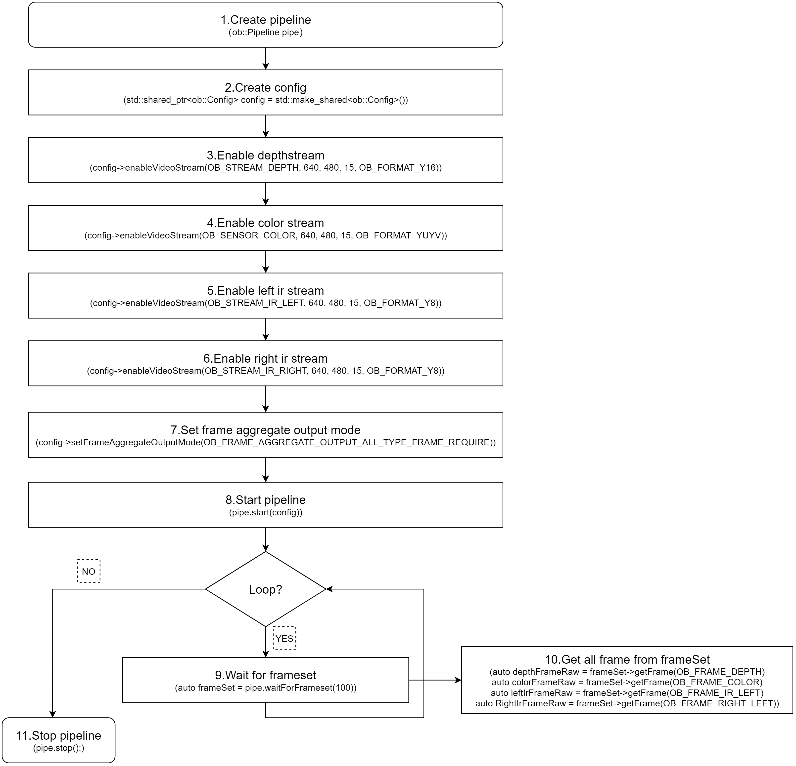
3.7. D2C
D2C 要求同时启用深度流和彩色流，本节介绍硬件 D2C 和软件 D2C。
3.7.1. 硬件 D2C
硬件 D2C 的关键接口是通过 ob::Config 将 D2C 模式设置为硬件模式，以启用硬件 D2C 功能。
config->setAlignMode(ALIGN_D2C_HW_MODE)
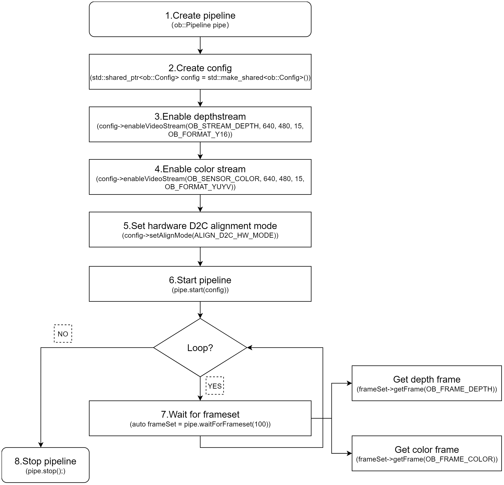
关键 API 描述：
// 1.使用默认设备创建 Pipeline。
ob::Pipeline pipe;
// 2.创建 config。
std::shared_ptr<ob::Config> config = std::make_shared<ob::Config>();
// 3.启用深度视频流。您可以根据使用需求修改相关参数。
config->enableVideoStream(OB_STREAM_DEPTH, 640, 480, 15, OB_FORMAT_Y16);
// 4.启用彩色视频流。您可以根据使用需求修改相关参数。
config->enableVideoStream(OB_STREAM_COLOR, 640, 480, 15, OB_FORMAT_YUYV);
// 5.设置硬件 D2C 对齐模式。
config->setAlignMode(ALIGN_D2C_HW_MODE);
// 6.使用 config 启动 Pipeline。
pipe.start(config);
while(true) {
// 7.在阻塞模式下，等待帧集，最多等待 100ms。
auto frameSet = pipe.waitForFrameset(100);
if(frameSet == nullptr) {
continue;
}
// 获取深度帧和彩色帧。
auto depthFrameRaw = frameSet->getFrame(OB_FRAME_DEPTH);
auto colorFrameRaw = frameSet->getFrame(OB_FRAME_COLOR);
}
// 8.停止 Pipeline。
pipe.stop();
3.7.2. 软件 D2C
软件 D2C 可采用同步或异步两种方式，下文介绍异步方式。它通过 ob::Align 滤波器实现：获取帧集后，通过 pushFrame 方法将其推入 ob::Align，处理后的 D2C 帧集再通过回调异步返回。
核心接口
auto depth2colorAlign = std::make_shared <ob::Align>(OB_STREAM_COLOR);
工作流程如下图：
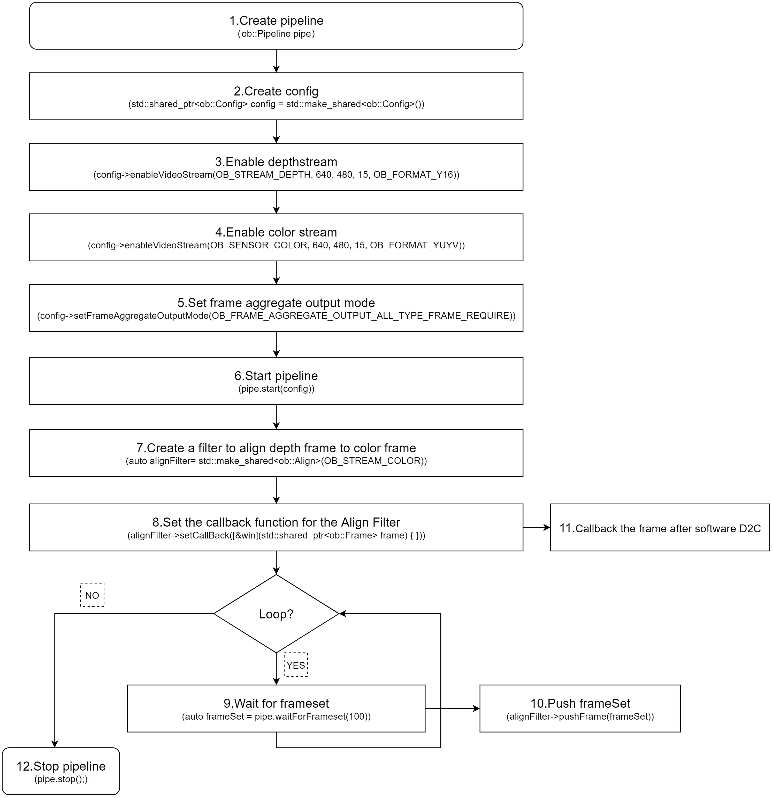
关键 API 描述：
// 1.使用默认设备创建 Pipeline。
ob::Pipeline pipe;
// 2.创建 config。
std::shared_ptr<ob::Config> config = std::make_shared<ob::Config>();
// 3.启用深度视频流。您可以根据使用需求修改相关参数。
config->enableVideoStream(OB_STREAM_DEPTH, 640, 480, 15, OB_FORMAT_Y16);
// 4.启用彩色视频流。您可以根据使用需求修改相关参数。
config->enableVideoStream(OB_STREAM_COLOR, 640, 480, 15, OB_FORMAT_YUYV);
// 5.设置帧汇聚的输出模式，确保输出的帧集中包含所有类型的帧。
config->setFrameAggregateOutputMode(OB_FRAME_AGGREGATE_OUTPUT_ALL_TYPE_FRAME_REQUIRE);
// 6.使用 config 启动 Pipeline。
pipe.start(config);
// 7.创建滤波器，将深度帧对齐到彩色帧。
auto depth2colorAlign = std::make_shared<ob::Align>(OB_STREAM_COLOR);
// 8.设置对齐滤波器的回调函数。
depth2colorAlign->setCallBack([&win](std::shared_ptr<ob::Frame> frame) {
// 11.对齐之后输出的帧。
auto alignFrameSet = frame->as<ob::FrameSet>();
if(alignFrameSet != nullptr) {
// 获取深度帧和彩色帧。
auto depthFrameRaw = alignFrameSet->getFrame(OB_FRAME_DEPTH);
auto colorFrameRaw = alignFrameSet->getFrame(OB_FRAME_COLOR);
}
});
while(true) {
// 9.在阻塞模式下，等待帧集，最多等待 100ms。
auto frameSet = pipe.waitForFrameset(100);
if(frameSet == nullptr) {
continue;
}
// 10.将帧集推送到对齐滤波器，以对齐各帧。
// 帧集将在内部线程中处理，得到的帧将通过回调函数异步输出。
depth2colorAlign->pushFrame(frameSet);
}
// 12.停止 Pipeline。
pipe.stop();
3.8. 软件 C2D
软件 C2D 可采用同步或异步两种方式，下文介绍异步方式。它通过 ob::Align 滤波器实现：获取帧集后，通过 pushFrame 方法将其推入 ob::Align，处理完成后由 ob::Align 的回调返回软件 C2D 生成的帧集。 核心接口
auto color2depthAlign = std::make_shared<ob::Align>(OB_STREAM_DEPTH);
工作流程如下图：
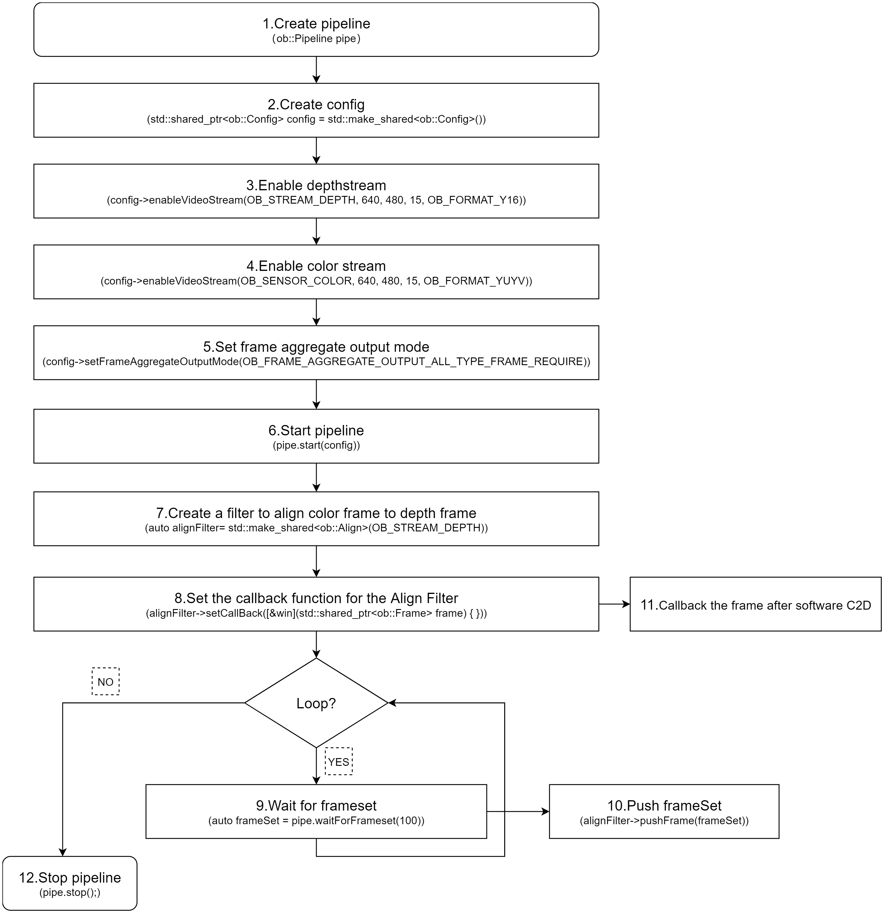
关键 API 描述：
// 1.使用默认设备创建 Pipeline。
ob::Pipeline pipe;
// 2.创建 config。
std::shared_ptr<ob::Config> config = std::make_shared<ob::Config>();
// 3.启用深度视频流。您可以根据使用需求修改相关参数。
config->enableVideoStream(OB_STREAM_DEPTH, 640, 480, 15, OB_FORMAT_Y16);
// 4.启用彩色视频流。您可以根据使用需求修改相关参数。
config->enableVideoStream(OB_STREAM_COLOR, 640, 480, 15, OB_FORMAT_RGB);
// 5.设置帧汇聚的输出模式，确保输出的帧集中包含所有类型的帧。
config->setFrameAggregateOutputMode(OB_FRAME_AGGREGATE_OUTPUT_ALL_TYPE_FRAME_REQUIRE);
// 6.使用 config 启动 Pipeline。
pipe.start(config);
// 7.创建滤波器，将彩色帧对齐到深度帧。
auto color2depthAlign = std::make_shared<ob::Align>(OB_STREAM_DEPTH);
// 8.设置对齐滤波器的回调函数。
depth2colorAlign->setCallBack([&win](std::shared_ptr<ob::Frame> frame) {
// 11.对齐之后输出的帧。
auto alignFrameSet = frame->as<ob::FrameSet>();
if(frameSet != nullptr) {
// 获取深度帧和彩色帧。
auto depthFrameRaw = frameSet->getFrame(OB_FRAME_DEPTH);
auto colorFrameRaw = frameSet->getFrame(OB_FRAME_COLOR);
}
});
while(true) {
// 9.在阻塞模式下，等待帧集，最多等待 100ms。
auto frameSet = pipe.waitForFrameset(100);
if(frameSet == nullptr) {
continue;
}
// 10.将帧集推送到对齐滤波器，以对齐各帧。
// 帧集将在内部线程中处理，得到的帧将通过回调函数异步输出。
color2depthAlign->pushFrame(frameSet);
}
// 12.停止 Pipeline。
pipe.stop();
3.9. 深度点云
该 SDK 提供了 ob::PointCloudFilter，用于处理深度数据并生成点云。深度数据既可以通过阻塞式方法获取，也可以通过回调获取。用户可以根据具体需求选择合适的方法。下一节将演示如何使用阻塞式方法获取深度流，并使用 ob::PointCloudFilter 生成点云。
使用 ob::PointCloudFilter 将深度数据转换为点云有两种方式：同步模式和异步回调模式。
3.9.1. 同步模式
ob::PointCloudFilter 接口在同步模式下的用法。
// 创建 PointCloudFilter。
auto pointCloud = std::make_shared<ob::PointCloudFilter>();
// 设置创建点云格式。
pointCloud->setCreatePointFormat(OB_FORMAT_POINT);
// 处理帧集以生成点云帧（也可以传入单个深度帧进行处理）。
std::shared_ptr<ob::Frame> frame = pointCloud->process(frameset);
工作流程如下图：
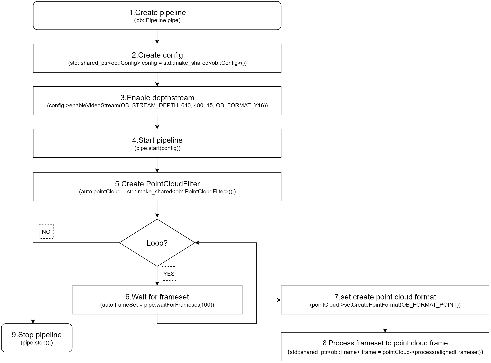
关键 API 描述：
// 1.使用默认设备创建 Pipeline。
ob::Pipeline pipe;
// 2.创建 config。
std::shared_ptr<ob::Config> config = std::make_shared<ob::Config>();
// 3.启用深度视频流。您可以根据使用需求修改相关参数。
config->enableVideoStream(OB_STREAM_DEPTH, 640, 480, 15, OB_FORMAT_Y16);
// 4.使用 config 启动 Pipeline。
pipe.start(config);
// 5.创建点云滤波器，用于根据深度帧和彩色帧生成点云帧。
auto pointCloud = std::make_shared<ob::PointCloudFilter>();
while(true) {
// 6.在阻塞模式下，等待帧集，最多等待 100ms。
auto frameSet = pipe.waitForFrameset(100);
if(frameSet == nullptr) {
continue;
}
// 7.设置创建点云格式。
pointCloud->setCreatePointFormat(OB_FORMAT_POINT);
// 8.处理帧集以生成点云帧（也可以传入单个深度帧进行处理）。
std::shared_ptr<ob::Frame> frame = pointCloud->process(frameSet);
}
// 9.停止 Pipeline。
pipe.stop();
3.9.2. 异步回调模式
ob::PointCloudFilter 接口的异步用法：
// 创建 PointCloudFilter。
auto pointCloud = std::make_shared<ob::PointCloudFilter>();
// 设置回调
pointCloud->setCallBack([&win](std::shared_ptr<ob::Frame> frame) {
// TODO:返回点云滤波后的帧。
});
// 设置创建点云格式。
pointCloud->setCreatePointFormat(OB_FORMAT_POINT);
// 将 waitForFrameset 返回的帧集传递给点云滤波器进行处理。
pointCloud->pushFrame(frameSet);
工作流程如下图：
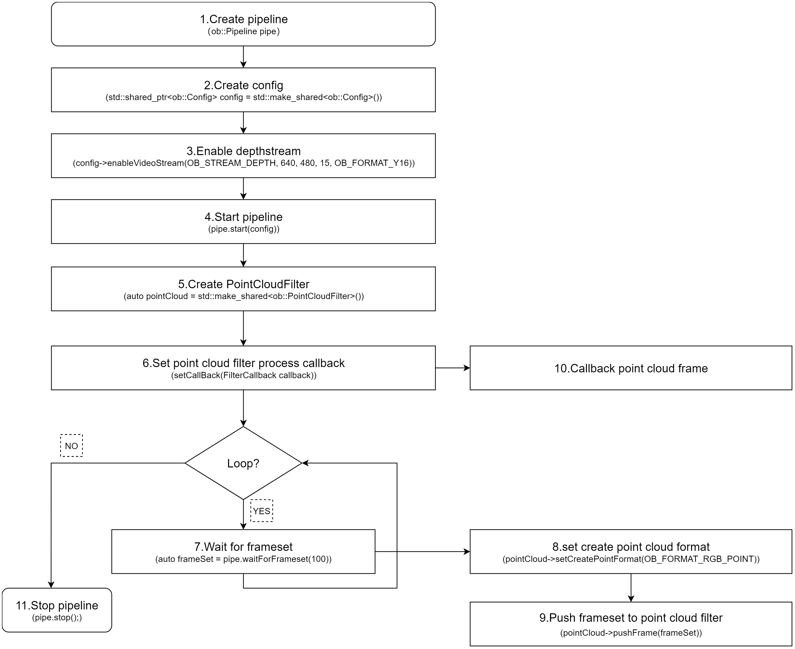
关键 API 描述：
// 1.使用默认设备创建 Pipeline。
ob::Pipeline pipe;
// 2.创建 config。
std::shared_ptr<ob::Config> config = std::make_shared<ob::Config>();
// 3.启用深度视频流。您可以根据使用需求修改相关参数。
config->enableVideoStream(OB_STREAM_DEPTH, 640, 480, 15, OB_FORMAT_Y16);
// 4.使用 config 启动 Pipeline。
pipe.start(config);
// 5.创建点云滤波器，用于根据深度帧和彩色帧生成点云帧。
auto pointCloud = std::make_shared<ob::PointCloudFilter>();
// 6.设置点云滤波器的回调函数。
pointCloud->setCallBack([&win](std::shared_ptr<ob::Frame> frame) {
// 10.经过点云滤波处理后的帧。
// TODO:用户处理。
});
while(true) {
// 7.在阻塞模式下，等待帧集，最多等待 100ms。
auto frameSet = pipe.waitForFrameset(100);
if(frameSet == nullptr) {
continue;
}
// 8.设置创建点云格式。
pointCloud->setCreatePointFormat(OB_FORMAT_POINT);
// 9.将帧集推送到点云滤波器，以生成点云。
// 帧集将在内部线程中处理，得到的帧将通过回调函数异步输出。
pointCloud->pushFrame(frameSet);
}
// 11.停止 Pipeline。
pipe.stop();
3.10. RGBD 点云
通过 SDK 同时采集深度数据流和彩色数据流，经过 ob::PointCloudFilter 处理，最终生成 RGBD 点云。
深度流和彩色流既可以通过阻塞方式获取，也可以通过回调方式获取，用户可根据具体需求进行选择。 以下演示如何通过阻塞方式获取深度流和彩色流，并使用 ob::PointCloudFilter 生成 RGBD 点云。
使用 ob::PointCloudFilter 根据深度帧和彩色帧生成 RGBD 点云数据有两种方式：同步模式和异步回调模式。
3.10.1. 同步模式
在同步模式下使用 ob::PointCloudFilter：
// 1.创建 PointCloudFilter。
auto pointCloud = std::make_shared<ob::PointCloudFilter>();
// 2.设置创建 RGBD 点云格式。
pointCloud->setCreatePointFormat(OB_FORMAT_RGB_POINT);
// 3.处理帧集以生成点云帧（也可以传入单个深度帧进行处理）。
std::shared_ptr<ob::Frame> frame = pointCloud->process(frameset);
工作流程如下图：
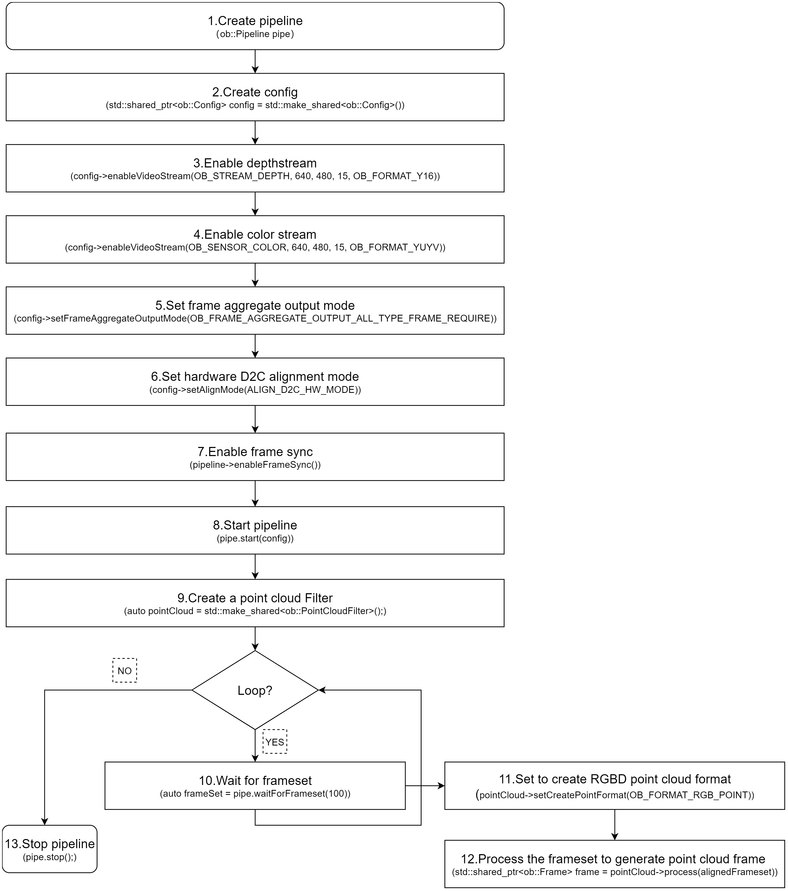
关键 API 描述：
// 1.使用默认设备创建 Pipeline。
ob::Pipeline pipe;
// 2.创建 config。
std::shared_ptr<ob::Config> config = std::make_shared<ob::Config>();
// 3.启用深度视频流。您可以根据使用需求修改相关参数。
config->enableVideoStream(OB_STREAM_DEPTH, 640, 480, 15, OB_FORMAT_Y16);
// 4.启用彩色视频流。您可以根据使用需求修改相关参数。
config->enableVideoStream(OB_STREAM_COLOR, 640, 480, 15, OB_FORMAT_YUYV);
// 5.设置帧汇聚的输出模式，确保输出的帧集中包含所有类型的帧。
config->setFrameAggregateOutputMode(OB_FRAME_AGGREGATE_OUTPUT_ALL_TYPE_FRAME_REQUIRE);
// 6.设置硬件 D2C 对齐模式。
config->setAlignMode(ALIGN_D2C_HW_MODE)
// 7.启用帧同步，确保帧集中深度帧和彩色帧保持同步。
pipe.enableFrameSync();
// 8.使用 config 启动 Pipeline。
pipe.start(config);
// 9.创建点云滤波器，用于根据深度帧和彩色帧生成点云帧
auto pointCloud = std::make_shared<ob::PointCloudFilter>();
while(true) {
// 10.在阻塞模式下，等待帧集，最多等待 100ms。
auto frameSet = pipe.waitForFrameset(100);
if(frameSet == nullptr) {
continue;
}
// 11.设置创建 RGBD 点云格式（仅当帧集中包含彩色帧和深度帧时生效）。
pointCloud->setCreatePointFormat(OB_FORMAT_RGB_POINT);
// 12.处理帧集以生成点云帧（也可以传入单个深度帧进行处理）。
std::shared_ptr<ob::Frame> frame = pointCloud->process(frameSet);
}
// 13.停止 Pipeline。
pipe.stop();
3.10.2. 异步回调模式
在异步回调模式下使用 ob::PointCloudFilter：
// 1.创建 PointCloudFilter。
auto pointCloud = std::make_shared<ob::PointCloudFilter>();
// 2.设置回调。
pointCloud->setCallBack([&win](std::shared_ptr<ob::Frame> frame) {
// TODO:返回点云滤波后的帧。
});
// 3.设置创建 RGBD 点云格式。
pointCloud->setCreatePointFormat(OB_FORMAT_RGB_POINT);
// 4.将 waitForFrameset 返回的帧集传递给点云滤波器进行处理。
pointCloud->pushFrame(frameSet);
工作流程如下图：
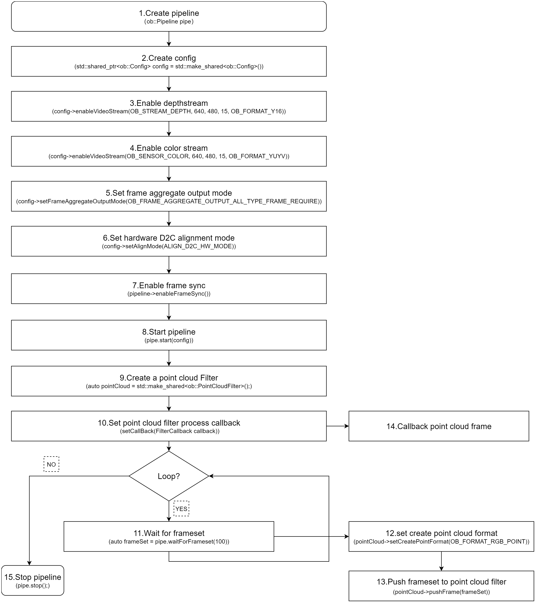
关键 API 描述：
// 1.使用默认设备创建 Pipeline。
ob::Pipeline pipe;
// 2.创建 config。
std::shared_ptr<ob::Config> config = std::make_shared<ob::Config>();
// 3.启用深度视频流。您可以根据使用需求修改相关参数。
config->enableVideoStream(OB_STREAM_DEPTH, 640, 480, 15, OB_FORMAT_Y16);
// 4.启用彩色视频流。您可以根据使用需求修改相关参数。
config->enableVideoStream(OB_STREAM_COLOR, 640, 480, 15, OB_FORMAT_YUYV);
// 5.设置帧汇聚的输出模式，确保输出的帧集中包含所有类型的帧。
config->setFrameAggregateOutputMode(OB_FRAME_AGGREGATE_OUTPUT_ALL_TYPE_FRAME_REQUIRE);
// 6.设置硬件 D2C 对齐模式。
config->setAlignMode(ALIGN_D2C_HW_MODE)
// 7.启用帧同步，确保帧集中深度帧和彩色帧保持同步。
pipe.enableFrameSync();
// 8.使用 config 启动 Pipeline。
pipe.start(config);
// 9.创建点云滤波器，用于根据深度帧和彩色帧生成点云帧。
auto pointCloud = std::make_shared<ob::PointCloudFilter>();
// 10.设置点云滤波器的回调函数。
pointCloud->setCallBack([&win](std::shared_ptr<ob::Frame> frame) {
// 14.经过点云滤波处理后的帧。
// TODO:用户处理。
});
while(true) {
// 11.在阻塞模式下，等待帧集，最多等待 100ms。
auto frameSet = pipe.waitForFrameset(100);
if(frameSet == nullptr) {
continue;
}
// 12.设置创建 RGBD 点云格式（仅当帧集中包含彩色帧和深度帧时生效）。
pointCloud->setCreatePointFormat(OB_FORMAT_RGB_POINT);
// 13.处理帧集以生成点云帧（也可以传入单个深度帧进行处理）。
std::shared_ptr<ob::Frame> frame = pointCloud->process(frameSet);
}
// 15.停止 Pipeline。
pipe.stop();
3.11. 去噪滤波
3.11.1. 硬件去噪滤波
硬件去噪滤波通过设备处理减少深度噪声。 目前，此功能仅在 Gemini 330 系列设备上支持（固件版本 v1.4.60 及以上）。
启用硬件滤波时，建议禁用软件去噪滤波，以降低 CPU 占用率。
关键 API 描述：
auto device = pipe.getDevice();
if(device->isPropertySupported(OB_PROP_HW_NOISE_REMOVE_FILTER_ENABLE_BOOL, OB_PERMISSION_READ_WRITE)) {
// 1.启用硬件去噪滤波。
device->setBoolProperty(OB_PROP_HW_NOISE_REMOVE_FILTER_ENABLE_BOOL, true);
// 2.调整硬件去噪滤波的阈值。
device->setFloatProperty(OB_PROP_HW_NOISE_REMOVE_FILTER_THRESHOLD_FLOAT, 0.1);
}
工作流程如下图：
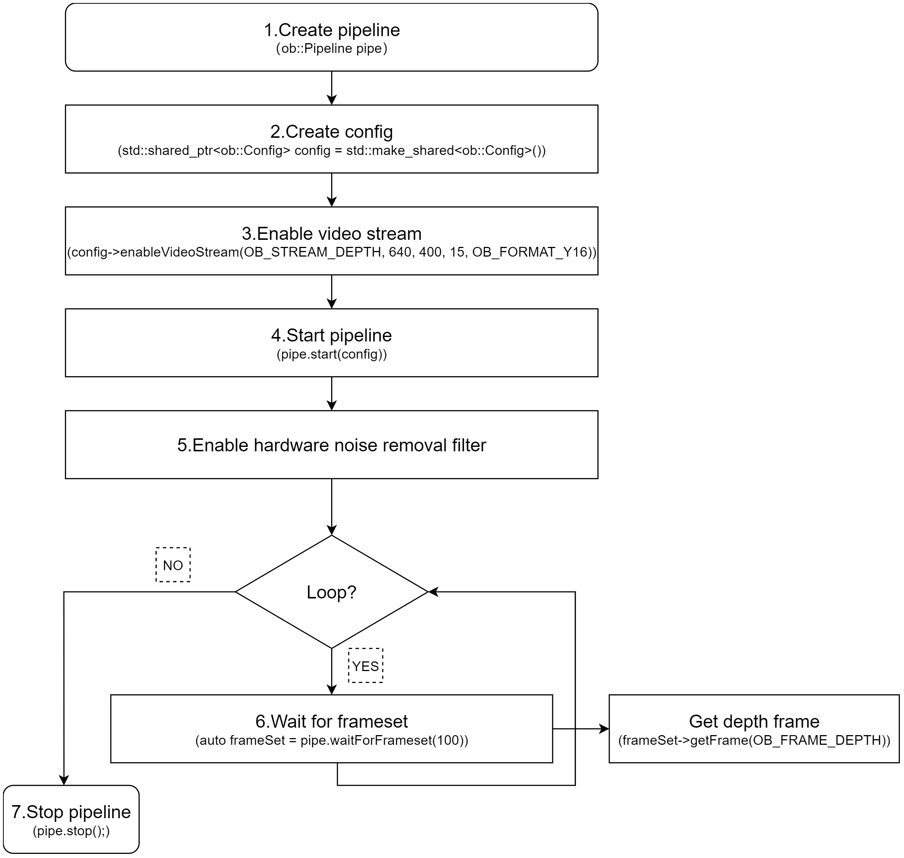
3.11.2. 软件去噪滤波
软件去噪滤波是 SDK 提供的一项处理功能，可通过软件算法降低深度噪声。
关键 API 描述：
// 1.通过 Pipeline 获取设备
auto device = pipe.getDevice();
// 2.判断是否启用滤波器。
auto enable = device->getBoolProperty(OB_PROP_DEPTH_NOISE_REMOVAL_FILTER_BOOL);
// 3.获取滤波器的相关参数。
auto max_diff = device->getIntProperty(OB_PROP_DEPTH_NOISE_REMOVAL_FILTER_MAX_DIFF_INT);
auto max_size = device->getIntProperty(OB_PROP_DEPTH_NOISE_REMOVAL_FILTER_MAX_SPECKLE_SIZE_INT);
// 4.设置滤波器的相关参数。
device->setBoolProperty(OB_PROP_DEPTH_NOISE_REMOVAL_FILTER_BOOL,true);
device->setIntProperty(OB_PROP_DEPTH_NOISE_REMOVAL_FILTER_MAX_DIFF_INT, 512);
device->setIntProperty(OB_PROP_DEPTH_NOISE_REMOVAL_FILTER_MAX_SPECKLE_SIZE_INT, 960);
3.12. Depth 后处理滤波
SDK 提供了一组推荐的后处理滤波器。有关后处理滤波器列表接口的使用方法，请参阅 SDK 自带的 advanced.post_processing 示例。
// 1.使用默认设备创建 Pipeline。
ob::Pipeline pipe;
// 2.获取设备和传感器，并获取该传感器推荐的滤波器列表。
auto device = pipe.getDevice();
// 3.获取深度传感器。
auto sensor = device->getSensor(OB_SENSOR_DEPTH);
// 4.创建推荐的滤波器列表。
auto filterList = sensor->createRecommendedFilters();
// 5.将推荐的滤波器应用于深度帧。
for(auto &filter: filterList) {
if(filter->isEnabled()) { //仅应用已启用的滤波器
processedFrame = filter->process(depthFrame);
}
}
工作流程如下图：
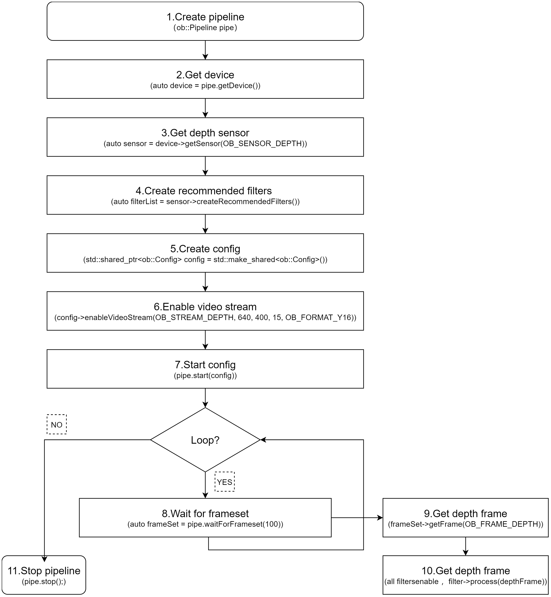
3.13. 录制与回放
3.13.1. 录制
录制数据流主要由 ob::RecordDevice 实现。
以深度流为例，分辨率设置为 640×400，帧率为 15 fps，输出格式为 Y16。 录制IR和彩色视频流的方法类似。 如果要同时录制多个流，可以将它们一并启用。
关键 API 描述：
// 使用输出文件初始化录制设备，并开始录制
auto recordDevice = std::make_shared<ob::RecordDevice>(device, filePath);
// 暂停
recorder->pause();
// 恢复
recorder->resume();
工作流程如下图：
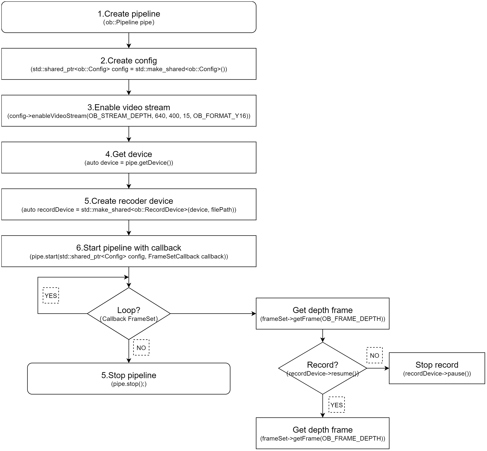
3.13.2. 回放
回放数据流主要由 ob::PlaybackDevice 实现。 有关回放的详细实现，请参阅 SDK 自带的 ob_device_playback 示例。
关键 API 描述：
// 使用输入文件初始化回放设备。
std::shared_ptr<ob::PlaybackDevice> playback = std::make_shared<ob::PlaybackDevice>(filePath);
// 设置回放速度，设置为 2 表示以两倍速度回放。
playback->setPlaybackRate(2);
// 回放设备的时长，单位为毫秒。
playback->getDuration();
// 获取当前回放位置。
playback->getPosition();
// 设置回放的起始点，该起始点必须位于录制内容的总时长之内。
playback->seek(timestamp)
工作流程如下图：
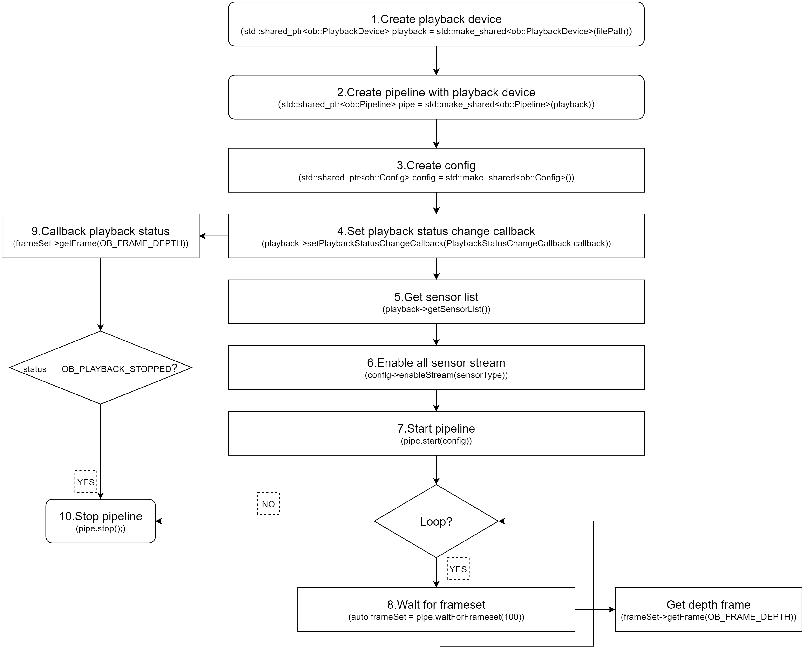
关键 API 描述：
// 获取有效的 .bag 文件。
std::string filePath = "./Depth.bag";
// 1.使用 Rosbag 文件创建回放设备
std::shared_ptr<ob::PlaybackDevice> playback = std::make_shared<ob::PlaybackDevice>(filePath);
// 2.使用回放设备创建 Pipeline。
std::shared_ptr<ob::Pipeline> pipe = std::make_shared<ob::Pipeline>(playback);
// 3.启用播放设备上的所有录制流。
std::shared_ptr<ob::Config> config = std::make_shared<ob::Config>();
// 4.设置回放状态变化回调，当回放停止时，使用相同的 config 重新启动 Pipeline。
bool playbackStop = false;
playback->setPlaybackStatusChangeCallback([&](OBPlaybackStatus status) {
if(status == OB_PLAYBACK_STOPPED) {
playbackStop = true;
}
});
// 5.获取回放传感器列表。
auto sensorList = playback->getSensorList();
// 6.启用回放数据流。
for(uint32_t i = 0; i < sensorList->getCount(); i++) {
auto sensorType = sensorList->getSensorType(i);
config->enableStream(sensorType);
}
// 7.使用 config 启动 Pipeline。
pipe->start(config);
while(!playbackStop) {
auto frameSet = pipe->waitForFrames(1000);
if(frameSet == nullptr) {
continue;
}
// 获取深度帧
auto depthFrame = frameSet->getFrame(OB_FRAME_DEPTH)
}
// 9.停止 Pipeline。
pipe->stop();
3.14. 固件升级
用户可以根据需要为 RGBD 相机开发固件升级功能。 以下演示如何升级单个 RGBD 相机的固件，并给出相应的流程图。
工作流程如下图：
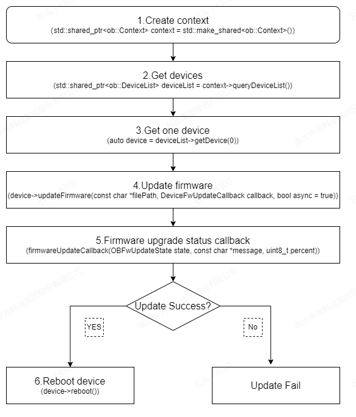
关键 API 描述：
// 1.创建 Context 以访问已连接的设备。
std::shared_ptr<ob::Context> context = std::make_shared<ob::Context>();
// 2.通过 Context 获取已连接的设备。
std::shared_ptr<ob::DeviceList> deviceList = context->queryDeviceList();
// 3.获取第一台设备。
auto device = deviceList->getDevice(0);
// 4.将 async 设置为 false，以同步阻塞方式等待设备固件升级完成。
devices->updateFirmware(firmwarePath, firmwareUpdateCallback, false);
// 5.固件升级状态回调。
void firmwareUpdateCallback(OBFwUpdateState state, const char *message, uint8_t percent) {
switch(state) {
case STAT_VERIFY_SUCCESS:
std::cout << "Image file verification success" << std::endl;
break;
case STAT_FILE_TRANSFER:
std::cout << "File transfer in progress" << std::endl;
break;
case STAT_DONE:
std::cout << "Update completed" << std::endl;
break;
case STAT_IN_PROGRESS:
std::cout << "Upgrade in progress" << std::endl;
break;
case STAT_START:
std::cout << "Starting the upgrade" << std::endl;
break;
case STAT_VERIFY_IMAGE:
std::cout << "Verifying image file" << std::endl;
break;
default:
std::cout << "Unknown status or error" << std::endl;
break;
}
std::cout << "Message : " << message << std::endl << std::flush;
}
// 6.升级成功后重启设备。
device->reboot();
更新多台设备的固件，请参阅：multi device firmware update
3.15. 深度预设
更新可选的深度预设，请参阅：optional_depth_presets_update
为固件升级进度定义一个回调函数。
您可以定义一个回调函数，以获取固件升级进度。每当设备更新其进度时，都会调用该回调函数。
void presetUpdateCallback(OBFwUpdateState state, const char *message, uint8_t percent) {
// 此处展示更新状态和信息。
}
更新可选的深度预设。
选择设备后，通过调用 updateOptionalDepthPresets 函数并传入指定的回调，即可更新该设备的预设。
device->updateOptionalDepthPresets(filePaths, count, presetUpdateCallback);
注意：该 API 支持一次升级多个预设。对于 G300 系列设备，一次最多可写入 3 个预设。第一个写入的预设将被设置为默认预设。
3.16. 设备断开与重新连接
SDK 提供了一个设备连接状态变化监听器，它有助于用户在设备断开连接时处理异常，并在设备重新连接时进行恢复。
// 1.创建 Context。
ob::Context ctx;
// 2.注册设备回调。
ctx.setDeviceChangedCallback([](std::shared_ptr<ob::DeviceList> removedList, std::shared_ptr<ob::DeviceList> deviceList) {
// 连接设备。
printDeviceList("added", deviceList);
// 断开设备连接。
printDeviceList("removed", removedList);
});
在 ob::Context 的 setDeviceChangedCallback 回调中，removedList 表示 SDK 检测到设备断开连接（离线），而 deviceList 表示 SDK 检测到设备建立连接（在线）。
3.17. 常用接口
3.17.1. 获取序列号
auto device = pipe.getDevice();
auto deviceInfo = device->getDeviceInfo();
std::string serialNumber = deviceInfo->serialNumber();
3.17.2. LDP 开关
LDP（激光距离保护）模块能够检测近距离的物体。启用 LDP 后，系统会检测相机指定距离范围内的障碍物，并逐渐降低激光功率等级，直至关闭激光，从而实现激光保护。禁用 LDP 时，该功能随之停用。
device->setBoolProperty(OB_PROP_LDP_BOOL, true);
3.17.3. LRM 开关
LRM（激光测距模块）使用与 LDP 开关相同的控制接口。支持该功能的设备为 Gemini 330 系列、Gemini 435Le 和 Gemini 305/305g。请注意，以上设备不支持 LDP 功能。
device->setBoolProperty(OB_PROP_LDP_BOOL, true);
3.17.4. 获取 LDP 测量值
用于在启用 LDP（激光距离保护）或 LRM（激光测距模块）时获取测量值。
int32_t value = device->getIntProperty(OB_PROP_LDP_MEASURE_DISTANCE_INT);
3.17.5. 获取 LDP 保护状态
bool status = device->getBoolProperty(OB_PROP_LDP_STATUS_BOOL);
3.17.6. 激光开关模式
Gemini 330 开启或关闭激光的命令如下：
// Gemini 330 系列激光控制，0：关闭，1：开启，2：自动
device->setBoolProperty(OB_PROP_LASER_CONTROL_INT, 1);
对于非 Gemini 330 设备，开启或关闭激光的命令如下：
device->setBoolProperty(OB_PROP_LASER_BOOL, true);
3.17.7. 设备重启
device->reboot();
3.17.8. 网络设备 IP 地址的修改与设置
设置网络相机配置参数——仅 Gemini 335Le 和 Femto Mega 系列等网络设备支持。
typedef struct {
/**
* @brief DHCP 状态。
* @note 0：静态 IP；1：DHCP。
*/
uint16_t dhcp;
/**
* @brief IP 地址（IPv4，大端：192.168.1.10，address[0] = 192，address[1] = 168，address[2] = 1，address[3] = 10）。
*/
uint8_t address[4];
/**
* @brief 子网掩码（大端）。
*/
uint8_t mask[4];
/**
* @brief 网关（大端）。
*/
uint8_t gateway[4];
} OBNetIpConfig, ob_net_ip_config, DEVICE_IP_ADDR_CONFIG;
// 设置网络参数，成功后需要重启设备。
OBNetIpConfig config;
device->setStructuredData(OB_STRUCT_DEVICE_IP_ADDR_CONFIG, reinterpret_cast<uint8_t *>(&config), sizeof(OBNetIpConfig));
3.17.9. 获取设备温度
ob::Pipeline pipe;
auto device = pipe.getDevice();
OBDeviceTemperature temperature = {0};
uint32_t dataSize = sizeof(OBDeviceTemperature);
device->getStructuredData(OB_STRUCT_DEVICE_TEMPERATURE, (uint8_t*)&temperature, (uint32_t*)&dataSize);
3.17.10. 获取设备基线
OBBaselineCalibrationParam baseParam = { 0 };
uint32_t size = 0;
device->getStructuredData(OB_STRUCT_BASELINE_CALIBRATION_PARAM, (uint8_t*)&baseParam, (uint32_t*)&size);
auto baseline = baseParam.baseline;
printf("baseline:%f\n",baseline);
3.17.11. 获取流配置
通过 Pipeline 获取流配置。
ob::Pipeline pipe;
// 获取 3D 相机的所有流配置列表。
auto colorProfiles = pipe.getStreamProfileList(OB_SENSOR_COLOR);
auto depthProfiles = pipe.getStreamProfileList(OB_SENSOR_DEPTH);
// 获取彩色流配置。
auto colorVideoProfile = colorProfiles->getVideoStreamProfile(640, 480, OB_FORMAT_MJPG, 30);
// 获取深度流配置。
auto depthVideoProfile = depthProfiles->getVideoStreamProfile(640, 480, OB_FORMAT_Y16, 30);
通过 Frame 获取流配置。
auto frameSet = pipe->waitForFrameset(100);
// 获取深度流配置。
auto depthFrame = frameSet->getFrame(OB_FRAME_DEPTH);
auto depthProfile = depthFrame->getStreamProfile();
auto depthVideoProfile = depthProfile->as<ob::VideoStreamProfile>();
// 获取彩色流配置。
auto colorFrame = frameSet->getFrame(OB_FRAME_COLOR);
auto colorProfile = colorFrame->getStreamProfile();
auto colorVideoProfile = colorProfile->as<ob::VideoStreamProfile>();
注意：深度、红外或彩色图像经过镜像、翻转或旋转后，必须从 Frame 中获取流配置，因为原始图像的几何结构已发生变化，且只有 Frame 包含正确的内参。
3.17.12. 获取 IMU 流配置
从 IMU Frame 获取 IMU 流配置。
auto frameSet = pipe.waitForFrameset();
// 获取加速度计数据流配置。
auto accelFrameRaw = frameSet->getFrame(OB_FRAME_ACCEL);
auto accelStreamProfile = accelFrameRaw->getStreamProfile();
auto accelProfile = accelStreamProfile->as<ob::AccelStreamProfile>();
// 获取陀螺仪数据流配置。
auto gyroFrameRaw = frameSet->getFrame(OB_FRAME_GYRO);
auto gyroStreamProfile = gyroFrameRaw->getStreamProfile();
auto gyroProfile = gyroStreamProfile->as<ob::GyroStreamProfile>();
3.17.13. 获取内参和外参
可以通过流配置获取内参和外参。
// 获取深度内参。
auto depthIntrinsic = depthVideoProfile->getIntrinsic();
auto depthDistortion = depthVideoProfile->getDistortion();
// 获取彩色内参。
auto colorIntrinsic = colorVideoProfile->getIntrinsic();
auto colorDistortion = colorVideoProfile->getDistortion();
// 获取深度到彩色的外参。
auto depthToColorExtrinsic = depthVideoProfile->getExtrinsicTo(colorVideoProfile);
3.17.14. 获取 IMU 内参
auto frameSet = pipe.waitForFrameset();
auto accelFrameRaw = frameSet->getFrame(OB_FRAME_ACCEL);
// 获取加速度计数据流配置。
auto accelStreamProfile = accelFrameRaw->getStreamProfile();
auto accelProfile = accelStreamProfile->as<ob::AccelStreamProfile>();
// 获取加速度计数据流内参。
auto accelIntrinsic = accelProfile->getIntrinsic();
auto gyroFrameRaw = frameSet->getFrame(OB_FRAME_GYRO);
// 获取陀螺仪数据流配置。
auto gyroStreamProfile = gyroFrameRaw->getStreamProfile();
auto gyroProfile = gyroStreamProfile->as<ob::GyroStreamProfile>();
// 获取陀螺仪数据流内参。
auto gyroIntrinsic = gyroProfile->getIntrinsic();
3.17.15. 获取视频帧与 IMU 之间的外参
// 深度到陀螺仪的外参。
auto depthToGyroExtrinsic = depthVideoProfile->getExtrinsicTo(gyroStreamProfile);
// 深度到加速度计的外参。
auto depthToAccelExtrinsic = depthVideoProfile->getExtrinsicTo(accelStreamProfile);
3.17.16. 设置 Depth 自动曝光
开启深度自动曝光。设置深度自动曝光相当于同时设置 IR 自动曝光。
device->setBoolProperty(OB_PROP_DEPTH_AUTO_EXPOSURE_BOOL, true);
3.17.17. 设置 Depth 曝光
设置深度曝光的前提是需要关闭深度自动曝光。设置深度曝光相当于设置 IR 曝光。
// 关闭自动曝光。
device->setBoolProperty(OB_PROP_DEPTH_AUTO_EXPOSURE_BOOL, false);
// 设置曝光。
device->setIntProperty(OB_PROP_DEPTH_EXPOSURE_INT, 1000);
3.17.18. 设置 Depth 增益
设置深度增益前，需要关闭深度自动曝光。设置深度增益相当于设置 IR 增益。
// 关闭自动曝光。
device->setBoolProperty(OB_PROP_DEPTH_AUTO_EXPOSURE_BOOL, false);
// 设置增益。gain：增益值。
device->setIntProperty(OB_PROP_DEPTH_GAIN_INT, gain); //
3.17.19. 设置 Depth 镜像
深度镜像是指沿垂直中心线水平翻转深度图像，即交换图像左右两侧的像素位置。
if(device->isPropertySupported(OB_PROP_DEPTH_MIRROR_BOOL, OB_PERMISSION_READ)) {
// 获取当前镜像状态。
bool isOpen = device->getBoolProperty(OB_PROP_DEPTH_MIRROR_BOOL);
if(device->isPropertySupported(OB_PROP_DEPTH_MIRROR_BOOL, OB_PERMISSION_WRITE)) {
device->setBoolProperty(OB_PROP_DEPTH_MIRROR_BOOL, !isOpen);
}
}
3.17.20. 设置 Depth 翻转
深度翻转是指沿 X 轴上下翻转深度图像，即交换图像的上下部分。
if(device->isPropertySupported(OB_PROP_DEPTH_FLIP_BOOL, OB_PERMISSION_WRITE)) {
// true：深度图像上下翻转；false：不翻转。
device->setBoolProperty(OB_PROP_DEPTH_FLIP_BOOL,true);
}
3.17.21. 设置 Depth 旋转
深度旋转角度可设置为 0、90、180 和 270 度。默认旋转角度为 0 度。
// 旋转参数。
Typedef enum {
OB_ROTATE_DEGREE_0 = 0, ///< 旋转 0 度
OB_ROTATE_DEGREE_90 = 90, ///< 旋转 90 度
OB_ROTATE_DEGREE_180 = 180, ///< 旋转 180 度
OB_ROTATE_DEGREE_270 = 270, ///< 旋转 270 度
} ob_rotate_degree_type, OBRotateDegreeType;
if(device->isPropertySupported(OB_PROP_DEPTH_ROTATE_INT, OB_PERMISSION_WRITE)) {
// 设置旋转角度。
device->setIntProperty(OB_PROP_DEPTH_ROTATE_INT, OB_ROTATE_DEGREE_90);
}
3.17.22. 设置 Depth 单位
G330 系列支持通过以下接口在固件中设置任意深度单位：
device->setFloatProperty(OB_PROP_DEPTH_UNIT_FLEXIBLE_ADJUSTMENT_FLOAT,0.1);
对于 Gemini 2 系列，只能通过以下接口配置一组有限的预定义深度单位：
typedef enum {
OB_PRECISION_1MM,
OB_PRECISION_0MM8,
OB_PRECISION_0MM4,
OB_PRECISION_0MM1,
OB_PRECISION_0MM2,
OB_PRECISION_0MM5,
OB_PRECISION_0MM05,
OB_PRECISION_UNKNOWN,
OB_PRECISION_COUNT,
} OBDepthPrecisionLevel
device->setIntProperty(OB_PROP_DEPTH_PRECISION_LEVEL_INT,OB_PRECISION_1MM);
3.17.23. 设置 Depth 的最小值和最大值
设置深度的最小值和最大值后，任何超出该范围的深度值都会被赋值为 0。该函数可用于滤除噪声。
// 创建 ThresholdFilter 滤波器。
auto filter = ob::FilterFactory::createFilter("ThresholdFilter");
auto thresholdFilter = filter->as<ob::ThresholdFilter>();
// 将最小值设置为 200，最大值设置为 5000。
thresholdFilter->setValueRange(200,5000);
// 从帧集中获取深度帧。
auto depthFrame = frameSet->getFrame(OB_FRAME_DEPTH);
// 进行滤波处理。
auto newFrame = thresholdFilter->process(depthFrame);
3.17.24. 相机深度工作模式
“深度模式”是“相机深度工作模式”的简称。该模式允许模组通过更改参数，使深度相机适配不同的应用场景。这些场景可能包括高精度、远距离和低功耗场景。每种深度应用场景相互独立，模式之间切换无需重启设备。
默认深度模式是指设备启动或重启后的当前工作模式。为确保使用正确的深度模式，每次设备启动时都需要切换到所需的模式。首次连接设备时，务必确认当前深度模式与目标深度模式一致。
请注意，Gemini2、Gemini2 L、Astra2 相机具有不同的深度模式。每种深度模式的功耗、支持的分辨率、帧率和有效深度检测范围可能各不相同。具体细节请参阅产品规格书。
// 1.检查是否支持相机深度工作模式。
if(!device->isPropertySupported(OB_STRUCT_CURRENT_DEPTH_ALG_MODE, OB_PERMISSION_READ_WRITE)) {
return;
}
// 2.查询当前相机深度模式。
auto curDepthMode = device->getCurrentDepthWorkMode();
// 3.获取相机深度模式列表。
auto depthModeList = device->getDepthWorkModeList();
for(uint32_t i = 0; i < depthModeList->getCount(); i++) {
std::cout << "depthModeList[" << i << "]: " << (*depthModeList)[i].name << std::endl;
}
// 4.将深度工作模式切换为默认模式（索引=0），用户可以按此方式切换到其他模式。
device->switchDepthWorkMode((*depthModeList)[0].name);
3.17.25. 视差转深度（D2D）
硬件 D2D
硬件 D2D 是指在设备内部实现视差转深度转换。在调用该函数之前，需要检查是否支持该接口属性。
if(device->isPropertySupported(OB_PROP_DISPARITY_TO_DEPTH_BOOL, OB_PERMISSION_WRITE)) {
// 参数：true 表示启用硬件 D2D，false 表示关闭硬件 D2D。
device->setBoolProperty(OB_PROP_DISPARITY_TO_DEPTH_BOOL, true);
}
软件 D2D
软件 D2D 是指在 SDK 内部实现视差转深度转换。除 Femto Mega 和 Femto Bolt 等 TOF 设备外，所有传感器设备均支持软件 D2D。在调用该函数之前，需要检查是否支持该接口属性。
if(device->isPropertySupported(OB_PROP_SDK_DISPARITY_TO_DEPTH_BOOL, OB_PERMISSION_WRITE)) {
// 参数：true 表示启用软件 D2D，false 表示关闭软件 D2D。
device->setBoolProperty(OB_PROP_SDK_DISPARITY_TO_DEPTH_BOOL, true);
}
3.17.26. 设置 IR自动曝光
开启 IR 自动曝光。
device->setBoolProperty(OB_PROP_IR_AUTO_EXPOSURE_BOOL, true);
3.17.27. 设置 IR 曝光
仅在关闭自动曝光时，曝光设置才会生效。
// 关闭自动曝光。
device->setBoolProperty(OB_PROP_IR_AUTO_EXPOSURE_BOOL, false);
// 设置曝光。
device->setIntProperty(OB_PROP_IR_EXPOSURE_INT, 1000);
3.17.28. 设置 IR 增益
仅在关闭自动曝光时，增益设置才会生效。
// 关闭自动曝光。
device->setBoolProperty(OB_PROP_IR_AUTO_EXPOSURE_BOOL, false);
// 设置增益。gain：增益值。
device->setIntProperty(OB_PROP_IR_GAIN_INT, gain);
3.17.29. 设置 IR 目标亮度
用于在自动曝光期间定义目标亮度。
device->setIntProperty(OB_PROP_IR_BRIGHTNESS_INT,60);
3.17.30. 设置 IR 最大曝光值
用于自动曝光期间定义最大曝光值
// 将最大曝光值设置为 3ms。
device->setIntProperty(OB_PROP_IR_AE_MAX_EXPOSURE_INT,3000);
3.17.31. 设置 IR 镜像
IR 镜像是指沿垂直中心线水平翻转 IR 图像，即交换图像左右两侧的像素位置。
if(device->isPropertySupported(OB_PROP_IR_MIRROR_BOOL, OB_PERMISSION_READ)) {
// 获取当前镜像状态。
bool isOpen = device->getBoolProperty(OB_PROP_IR_MIRROR_BOOL);
if(device->isPropertySupported(OB_PROP_IR_MIRROR_BOOL, OB_PERMISSION_WRITE)) {
device->setBoolProperty(OB_PROP_IR_MIRROR_BOOL, !isOpen);
}
}
3.17.32. 设置 IR 翻转
IR 翻转是指沿 X 轴上下翻转 IR 图像，即交换图像的上下部分。
if(device->isPropertySupported(OB_PROP_IR_FLIP_BOOL, OB_PERMISSION_WRITE)) {
// true：IR 图像上下翻转；false：不翻转。
device->setBoolProperty(OB_PROP_IR_FLIP_BOOL,true);
}
3.17.33. 设置 IR 旋转
IR 旋转角度可设置为 0、90、180 和 270 度。默认旋转角度为 0 度。
// 旋转参数。
Typedef enum {
OB_ROTATE_DEGREE_0 = 0, ///< 旋转 0 度
OB_ROTATE_DEGREE_90 = 90, ///< 旋转 90 度
OB_ROTATE_DEGREE_180 = 180, ///< 旋转 180 度
OB_ROTATE_DEGREE_270 = 270, ///< 旋转 270 度
} ob_rotate_degree_type, OBRotateDegreeType;
if(device->isPropertySupported(OB_PROP_IR_ROTATE_INT, OB_PERMISSION_WRITE)) {
// 设置旋转角度。
device->setIntProperty(OB_PROP_IR_ROTATE_INT, OB_ROTATE_DEGREE_90);
}
3.17.34. 设置 Color自动曝光
开启 Color 自动曝光。
device->setBoolProperty(OB_PROP_COLOR_AUTO_EXPOSURE_BOOL, true);
3.17.35. 设置 Color 曝光
仅在关闭自动曝光时，曝光设置才会生效。
// 关闭自动曝光。
device->setBoolProperty(OB_PROP_COLOR_AUTO_EXPOSURE_BOOL, false);
// 设置曝光。
device->setIntProperty(OB_PROP_COLOR_EXPOSURE_INT, 1000);
3.17.36. 设置 Color 增益
仅在关闭自动曝光时，增益设置才会生效。
// 关闭自动曝光。
device->setBoolProperty(OB_PROP_COLOR_AUTO_EXPOSURE_BOOL, false);
// 设置增益。gain：增益值。
device->setIntProperty(OB_PROP_COLOR_GAIN_INT, gain);
3.17.37. 设置 Color 镜像
Color 镜像是指沿垂直中心线水平翻转 Color 图像，即交换图像左右两侧的像素位置。
// 设置 Color 镜像。
if(device->isPropertySupported(OB_PROP_COLOR_MIRROR_BOOL, OB_PERMISSION_READ)) {
if(device->isPropertySupported(OB_PROP_COLOR_MIRROR_BOOL, OB_PERMISSION_WRITE)) {
// 参数：true 表示镜像，false 表示不镜像。
device->setBoolProperty(OB_PROP_COLOR_MIRROR_BOOL, true);
}
}
3.17.38. 设置 Color 翻转
Color 翻转是指沿 X 轴上下翻转 Color 图像，即交换图像的上下部分。
if(device->isPropertySupported(OB_PROP_COLOR_FLIP_BOOL, OB_PERMISSION_WRITE)) {
// true：图像上下翻转；false：不翻转。
device->setBoolProperty(OB_PROP_COLOR_FLIP_BOOL, true);
}
3.17.39. 设置 Color 旋转
Color 旋转角度可设置为 0、90、180 和 270 度。默认旋转角度为 0 度。
// 旋转参数。
Typedef enum {
OB_ROTATE_DEGREE_0 = 0, ///< 旋转 0 度
OB_ROTATE_DEGREE_90 = 90, ///< 旋转 90 度
OB_ROTATE_DEGREE_180 = 180, ///< 旋转 180 度
OB_ROTATE_DEGREE_270 = 270, ///< 旋转 270 度
} ob_rotate_degree_type, OBRotateDegreeType;
if(device->isPropertySupported(OB_PROP_COLOR_ROTATE_INT, OB_PERMISSION_WRITE)) {
// 设置旋转角度。
device->setIntProperty(OB_PROP_COLOR_ROTATE_INT, OB_ROTATE_DEGREE_90);
}
3.17.40. 设置 Color 自动白平衡（AWB）
device->setBoolProperty(OB_PROP_COLOR_AUTO_WHITE_BALANCE_BOOL, true);
3.17.41. 设置 Color 白平衡参数
设置白平衡参数前，必须先关闭自动白平衡。
// 首先，关闭 AWB（自动白平衡）。
device->setBoolProperty(OB_PROP_COLOR_AUTO_WHITE_BALANCE_BOOL, false);
device->setIntProperty(OB_PROP_DEPTH_EXPOSURE_INT, colorWhiteBalance);
3.17.42. 设置 Color 亮度
device->setIntProperty(OB_PROP_COLOR_BRIGHTNESS_INT, brightness);
3.17.43. 设置 Color 锐度
device->setIntProperty(OB_PROP_COLOR_SHARPNESS_INT, sharpness);
3.17.44. 设置 Color Gamma
device->setIntProperty(OB_PROP_COLOR_GAMMA_INT, gamma);
3.17.45. 设置 Color 饱和度
device->setIntProperty(OB_PROP_COLOR_SATURATION_INT, saturation);
3.17.46. 设置 Color 色调
device->setIntProperty(OB_PROP_COLOR_HUE_INT, hue);
3.17.47. 设置 Color 自动曝光优先级
device->setIntProperty(OB_PROP_COLOR_AUTO_EXPOSURE_PRIORITY_INT, 1);
3.17.48. 设置 Color 背光补偿
device->setIntProperty(OB_PROP_COLOR_BACKLIGHT_COMPENSATION_INT, 1);
3.17.49. 设置 Color 对比度
device->setIntProperty(OB_PROP_COLOR_CONTRAST_INT, contrast);
3.17.50. 设置 Color 电力线路频率
需根据不同国家和地区的电力线路频率设置为 50Hz 或 60Hz。设置电力线路频率的目的是防止 Color 图像产生闪烁。
typedef enum {
OB_POWER_LINE_FREQ_MODE_CLOSE = 0, ///< 关闭
OB_POWER_LINE_FREQ_MODE_50HZ = 1, ///< 50Hz
OB_POWER_LINE_FREQ_MODE_60HZ = 2, ///< 60Hz
} ob_power_line_freq_mode,
OBPowerLineFreqMode;
if(device->isPropertySupported(OB_PROP_COLOR_POWER_LINE_FREQUENCY_INT, OB_PERMISSION_WRITE)) {
int powerFreq = OB_POWER_LINE_FREQ_MODE_50HZ;
device->setIntProperty(OB_PROP_COLOR_BRIGHTNESS_INT, powerFreq);
}
3.17.51. 激光开关模式
当前仅 Gemini 330 系列支持该功能（需要固件版本 v1.4.00 或更高版本），并要求 Orbbec SDK 版本为 v2.1.1 或更高版本。
// 加载帧交错模式为激光开关模式。
device->loadFrameInterleave("Laser On-Off");
// 开启帧交错。
device->setBoolProperty(OB_PROP_FRAME_INTERLEAVE_ENABLE_BOOL, true);
详细实现请参考 SDK 示例。
3.17.52. HDR 融合
当前仅 Gemini 330 系列支持，详细实现请参考 SDK 示例。
关键 API 描述：
// 1.创建 HDRMerge 滤波器。
auto hdrMerge = ob::FilterFactory::createFilter("HDRMerge");
// 2.设置相关参数。
if( device->isFrameInterleaveSupported() ) {
// 固件版本 v1400 及以上支持。
// 加载帧交错模式为 Depth from HDR。
device->loadFrameInterleave("Depth from HDR");
// 开启帧交错模式。
device->setBoolProperty(OB_PROP_FRAME_INTERLEAVE_ENABLE_BOOL, true);
}else {
// 配置并开启 HDR 流。
OBHdrConfig obHdrConfig;
// 开启 HDR 融合。
obHdrConfig.enable = true;
obHdrConfig.exposure_1 = 7500;
obHdrConfig.gain_1 = 24;
obHdrConfig.exposure_2 = 100;
obHdrConfig.gain_2 = 16;
device->setStructuredData(OB_STRUCT_DEPTH_HDR_CONFIG, reinterpret_cast<uint8_t *>(&obHdrConfig), sizeof(OBHdrConfig));
}
// 3.获取帧集，使用 HDRMerge 滤波器 融合 HDR 帧。
auto frameSet = pipe.waitForFrameset(100);
auto result = hdrMerge->process(frameSet);
3.17.53. 获取 MetaData
可从返回的 ob::Frame 对象中获取 MetaData。支持的帧类型包括深度、左IR、右IR和彩色。
关键 API 描述：
// ob::Frame 提供的接口可对应具体的 ob::Frame 类型，例如深度、左IR、右IR和彩色。
// 判断指定的 OBFrameMetadataType 是否存在。
bool hasMetadata(OBFrameMetadataType type);
// 获取指定 OBFrameMetadataType 的类型值。
int64_t getMetadataValue(OBFrameMetadataType type);
// OBFrameMetadataType 类型如下。
typedef enum {
/**
* @brief 采集帧时的时间戳。
* @attention 不同设备型号的单位可能不同。建议使用时间戳相关函数。
* 来获取正确单位的时间戳。
*/
OB_FRAME_METADATA_TYPE_TIMESTAMP = 0,
/**
* @brief 采集过程中的中间时刻时间戳。
* @brief 通常为曝光时间的中间时刻。
* @attention 不同设备型号的单位可能不同。
*/
OB_FRAME_METADATA_TYPE_SENSOR_TIMESTAMP = 1,
/**
* @brief 当前帧的编号。
*/
OB_FRAME_METADATA_TYPE_FRAME_NUMBER = 2,
/**
* @brief 自动曝光状态。
* @brief 如果值为 0，表示自动曝光已关闭；否则表示自动曝光已开启。
*/
OB_FRAME_METADATA_TYPE_AUTO_EXPOSURE = 3,
/**
* @brief 曝光时间。
* @attention 不同传感器的单位可能不同。通常彩色传感器为 100us，深度/IR传感器为 1us。
*/
OB_FRAME_METADATA_TYPE_EXPOSURE = 4,
/**
* @brief 增益。
* @attention 对于某些设备型号，增益值表示增益等级，而非倍数。
*/
OB_FRAME_METADATA_TYPE_GAIN = 5,
/**
* @brief 自动白平衡状态。
* @brief 如果值为 0，表示自动白平衡已关闭；否则表示自动白平衡已开启。
*/
OB_FRAME_METADATA_TYPE_AUTO_WHITE_BALANCE = 6,
/**
* @brief 白平衡。
*/
OB_FRAME_METADATA_TYPE_WHITE_BALANCE = 7,
/**
* @brief 亮度。
*/
OB_FRAME_METADATA_TYPE_BRIGHTNESS = 8,
/**
* @brief 对比度。
*/
OB_FRAME_METADATA_TYPE_CONTRAST = 9,
/**
* @brief 饱和度。
*/
OB_FRAME_METADATA_TYPE_SATURATION = 10,
/**
* @brief 锐度。
*/
OB_FRAME_METADATA_TYPE_SHARPNESS = 11,
/**
* @brief 背光补偿。
*/
OB_FRAME_METADATA_TYPE_BACKLIGHT_COMPENSATION = 12,
/**
* @brief 色调。
*/
OB_FRAME_METADATA_TYPE_HUE = 13,
/**
* @brief Gamma。
*/
OB_FRAME_METADATA_TYPE_GAMMA = 14,
/**
* @brief 电力线路频率。
* @brief 用于防闪烁，0：关闭，1：50Hz，2：60Hz，3：自动。
*/
OB_FRAME_METADATA_TYPE_POWER_LINE_FREQUENCY = 15,
/**
* @brief 暗光补偿。
* @attention 暗光补偿是设备内部的功能，无法手动控制。
*/
OB_FRAME_METADATA_TYPE_LOW_LIGHT_COMPENSATION = 16,
/**
* @brief 手动白平衡设置。
*/
OB_FRAME_METADATA_TYPE_MANUAL_WHITE_BALANCE = 17,
/**
* @brief 实际帧率。
* @brief 实际帧率将根据曝光时间和其他参数计算得出。
*/
OB_FRAME_METADATA_TYPE_ACTUAL_FRAME_RATE = 18,
/**
* @brief 帧率。
*/
OB_FRAME_METADATA_TYPE_FRAME_RATE = 19,
/**
* @brief 自动曝光算法的左侧目标区域。
*/
OB_FRAME_METADATA_TYPE_AE_ROI_LEFT = 20,
/**
* @brief 自动曝光算法的上侧目标区域。
*/
OB_FRAME_METADATA_TYPE_AE_ROI_TOP = 21,
/**
* @brief 自动曝光算法的右侧目标区域。
*/
OB_FRAME_METADATA_TYPE_AE_ROI_RIGHT = 22,
/**
* @brief 自动曝光算法的下侧目标区域。
*/
OB_FRAME_METADATA_TYPE_AE_ROI_BOTTOM = 23,
/**
* @brief 曝光优先级。
*/
OB_FRAME_METADATA_TYPE_EXPOSURE_PRIORITY = 24,
/**
* @brief HDR 序列名称。
*/
OB_FRAME_METADATA_TYPE_HDR_SEQUENCE_NAME = 25,
/**
* @brief HDR 序列数目。
*/
OB_FRAME_METADATA_TYPE_HDR_SEQUENCE_SIZE = 26,
/**
* @brief HDR 序列索引。
*/
OB_FRAME_METADATA_TYPE_HDR_SEQUENCE_INDEX = 27,
/**
* @brief 激光功率值，单位 mW。
* @attention 激光功率值为近似估计值。
*/
OB_FRAME_METADATA_TYPE_LASER_POWER = 28,
/**
* @brief 激光功率等级。
*/
OB_FRAME_METADATA_TYPE_LASER_POWER_LEVEL = 29,
/**
* @brief 激光状态。
* @brief 0：激光关闭，1：激光开启。
*/
OB_FRAME_METADATA_TYPE_LASER_STATUS = 30,
/**
* @brief GPIO 数据输入。
*/
OB_FRAME_METADATA_TYPE_GPIO_INPUT_DATA = 31,
/**
* @brief 视差搜索偏移值。
*/
OB_FRAME_METADATA_TYPE_DISPARITY_SEARCH_OFFSET = 32,
/**
* @brief 视差搜索范围。
*/
OB_FRAME_METADATA_TYPE_DISPARITY_SEARCH_RANGE = 33,
/**
* @brief 帧元数据类型的数量，用于遍历所有类型。
* @attention 该值不是有效的帧元数据类型。
*/
OB_FRAME_METADATA_TYPE_COUNT,
} ob_frame_metadata_type, OBFrameMetadataType;
如何从 ob::Frame 的 MetaData 中获取曝光值。其他 MetaData 字段可用类似方式访问。
if(frame->hasMetadata(OB_FRAME_METADATA_TYPE_EXPOSURE)) {
uint64_t exp = getMetadataValue(OB_FRAME_METADATA_TYPE_EXPOSURE);
}
3.17.54. 触发采集
3.17.54.1. 软件触发采集
// 首先，通过 Device 将设备配置为软件触发模式。
auto curConfig = device->getMultiDeviceSyncConfig();
curConfig.syncMode = OB_MULTI_DEVICE_SYNC_MODE_SOFTWARE_TRIGGERING;
device->setMultiDeviceSyncConfig(curConfig);
// 最后，在开启视频流后，通过 Device 提供的接口采集数据流。
device->triggerCapture();
3.17.54.2. 定时抓拍
对于 Gemini 2/Gemini 2 L 以及早期版本的 Gemini 330 系列固件，定时抓拍必须由用户在应用程序中实现。用户需要创建一个单独的线程，定期触发软件采集。
// 首先，通过 Device 将设备配置为软件触发模式。
auto curConfig = device->getMultiDeviceSyncConfig();
curConfig.syncMode = OB_MULTI_DEVICE_SYNC_MODE_SOFTWARE_TRIGGERING;
device->setMultiDeviceSyncConfig(curConfig);
// 最后，在开启视频流后，创建一个线程，通过 Device 提供的接口定期触发。
device->triggerCapture();
对于固件版本 v1.5.10 及以上的 Gemini 330 系列，且使用 OrbbecSDK v2.2.12 及以上版本时，固件已支持内置定时抓拍功能。SDK 提供了两个新接口：一个用于开启定时抓拍，另一个用于设置固件端的采集时间间隔。您不再需要创建线程来手动触发采集。
// 首先，通过 Device 将设备配置为软件触发模式。
auto curConfig = device->getMultiDeviceSyncConfig();
curConfig.syncMode = OB_MULTI_DEVICE_SYNC_MODE_SOFTWARE_TRIGGERING;
device->setMultiDeviceSyncConfig(curConfig);
// 设置自动采集时间间隔，单位：ms。
device->setIntProperty(OB_DEVICE_AUTO_CAPTURE_INTERVAL_TIME_INT, 67);
// 启用自动采集：设置为 true 表示自动采集，设置为 false 表示手动采集。
device->setBoolProperty(OB_DEVICE_AUTO_CAPTURE_ENABLE_BOOL, true);
3.17.55. 时间戳清零
时间戳清零命令
该命令用于多设备同步场景，只需发送给主设备即可。复位主设备的时间戳即可，因为主设备可配置为输出复位信号，从而复位从设备。
device->setBoolProperty(OB_PROP_TIMER_RESET_SIGNAL_BOOL,true);
时间戳清零信号输出开关
开启该选项后，时间戳清零信号可发送至从设备进行复位。
// true：表示向外发送触发信号，false：表示不向外发送触发信号。
device->setBoolProperty(OB_PROP_TIMER_RESET_TRIGGER_OUT_ENABLE_BOOL,true);
复位信号延迟
定义收到触发信号后延迟多久再复位。该函数可用于主从同步场景，以避免激光干扰。
// 延迟时间以微秒（us）为单位，例如设置为 20 表示 20 微秒。
device->setIntProperty(OB_PROP_TIMER_RESET_DELAY_US_INT,20);
开启时间戳清零
对于 Gemini 330 系列和 Gemini 2 系列设备，可直接使用上述三个接口，无需额外调用开启命令。 但对于 Femto Mega 系列设备，必须先调用时间戳清零开启接口，然后才能使用时间戳清零功能及上述三个接口。
// true：表示开启时间戳清零功能。
device->setBoolProperty(OB_PROP_TIMER_RESET_ENABLE_BOOL,true);
3.17.56. 设备时间同步
要同步多台设备，参数 "repeatInterval" 表示同步时间间隔，单位为毫秒（ms）。例如，要每半小时同步一次，repeatInterval 应设为 30 * 60 * 1000（ms）。
context->enableDeviceClockSync(uint64_t repeatInterval);
要同步单台设备，需定期调用时间同步函数，例如每 60 分钟调用一次。
device->timerSyncWithHost();
3.17.57. 多设备同步
有关多设备同步的详细信息，请参阅多设备同步文档。
3.17.57.1. USB 和网络设备
3.17.57.2. GMSL 设备
GMSL 多设备同步请参阅本文档，有两种使用方式：
第一种是将所有设备设置为 OB_MULTI_DEVICE_SYNC_MODE_SECONDARY 模式，并通过 PWM 触发进行同步。
第二种是将所有设备设置为 OB_MULTI_DEVICE_SYNC_MODE_HARDWARE_TRIGGERING 模式，并通过 PWM 触发进行同步。
有关 PWM 触发，请参阅 ob_multi_devices_sync_gmsltrigger 示例。
有关多设备同步，请参阅 ob_multi_devices_sync 示例
注意：为使多设备同步示例简单且通用，PWM 触发已拆分为单独的示例。GMSL2/FAKRA 需要运行两个示例进行测试。如果您正在开发自己的应用程序，可以将这两项功能合并到一个应用程序中。
如何使用 C++ 示例测试多设备同步
3.17.57.2.1. 编译
将 OrbbecSDK 示例包 OrbbecSDK_v2.x.x_xxxxxxxx_linux_aarch64.zip 解压到当前目录。
打开终端，使用 cd 命令进入解压后的目录。
运行 setup 脚本来编译并配置环境：
sudo ./setup.sh
3.17.57.2.2. 多设备同步配置
以两台 Gemini 335Lg 设备为例，MultiDeviceSyncConfig.json 如下：
{
"version": "1.0.0",
"configTime": "2025/05/23",
"devices": [
{
"sn": "CP4H74D0000Z",
"syncConfig": {
"syncMode": "OB_MULTI_DEVICE_SYNC_MODE_SECONDARY",
"depthDelayUs": 0,
"colorDelayUs": 0,
"trigger2ImageDelayUs": 0,
"triggerOutEnable": true,
"triggerOutDelayUs": 0,
"framesPerTrigger": 1
}
},
{
"sn": "CP4H74D0004K",
"syncConfig": {
"syncMode": "OB_MULTI_DEVICE_SYNC_MODE_SECONDARY",
"depthDelayUs": 0,
"colorDelayUs": 0,
"trigger2ImageDelayUs": 0,
"triggerOutEnable": true,
"triggerOutDelayUs": 0,
"framesPerTrigger": 1
}
}
]
}
sn：替换为设备的实际序列号。
syncMode：可设置为 OB_MULTI_DEVICE_SYNC_MODE_SECONDARY 或 OB_MULTI_DEVICE_SYNC_MODE_HARDWARE_TRIGGERING。
两种同步模式的区别如下：
OB_MULTI_DEVICE_SYNC_MODE_SECONDARY：将设备设置为从设备模式。在该模式下，PWM 触发帧率必须与实际视频流帧率一致。例如，视频流帧率为 30 fps 时，PWM 帧率也必须设为 30。
OB_MULTI_DEVICE_SYNC_MODE_HARDWARE_TRIGGERING：将设备设置为硬件触发模式。在该模式下，PWM 触发信号不得超过视频流帧率的一半。例如，视频流帧率为 30 fps 时，PWM 触发信号超过 15，相机仍只会以 15 fps 采集图像。即当视频流帧率为 30 fps 时，PWM 触发信号的有效范围为 1 至 15 fps。
1. 打开第一个终端并运行多设备同步示例
```cpp
$ ./ob_multi_devices_sync
--------------------------------------------------
Please select options:
0 --> config devices sync mode.
1 --> start stream
--------------------------------------------------
Please select input: 0
2. 打开第二个终端并以管理员权限运行发送 PWM 触发信号的示例
orbbec@agx:~/SensorSDK/build/install/Example/bin$ sudo ./ob_multi_devices_sync_gmsltrigger
Please select options:
------------------------------------------------------------
0 --> config GMSL SOC hardware trigger Source. Set trigger fps:
1 --> start Trigger
2 --> stop Trigger
3 --> exit
------------------------------------------------------------
input select item: 0
Enter FPS (frames per second) (for example: 3000): 3000
Setting FPS to 3000...
Please select options:
------------------------------------------------------------
0 --> config GMSL SOC hardware trigger Source. Set trigger fps:
1 --> start Trigger
2 --> stop Trigger
3 --> exit
------------------------------------------------------------
input select item: 1
注意： 输入 FPS（每秒帧数），例如输入 3000，表示 30 fps。
3.17.57.2.3. 测试结果
观察时间戳。如下图所示，两台设备的时间戳相同，表明两台设备已成功同步。
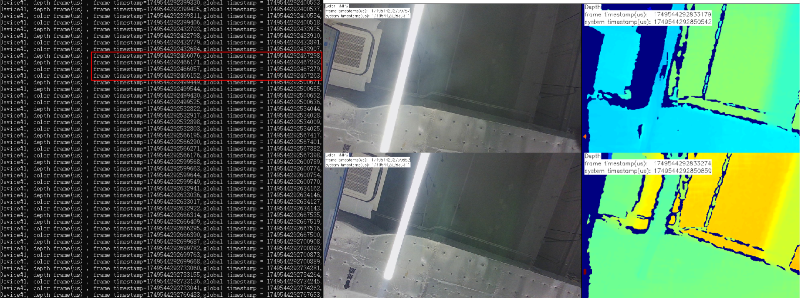
3.18. 日志管理
每个日志管理接口都有一个日志级别参数，日志级别由最后调用的接口决定。 要设置全局日志级别，可使用 setLoggerSeverity 函数，它同时控制控制台输出、文件输出和日志回调函数的日志级别。 以下三种日志输出方式相互独立，设置其中一种不会影响其他方式。
1、将日志输出到控制台（setLoggerToConsole 函数）
2、将日志输出到文件（setLoggerToFile 函数）
3、通过回调函数输出日志（setLoggerToCallback 函数）
3.18.1. 设置日志级别
typedef enum {
OB_LOG_SEVERITY_DEBUG, /**< 调试 */
OB_LOG_SEVERITY_INFO, /**< 信息 */
OB_LOG_SEVERITY_WARN, /**< 警告 */
OB_LOG_SEVERITY_ERROR, /**< 错误 */
OB_LOG_SEVERITY_FATAL, /**< 致命错误 */
OB_LOG_SEVERITY_OFF /**< 关闭（不输出日志） */
} OBLogSeverity
ob::Context context;
// 设置日志输出的日志级别。
context.setLoggerSeverity(OB_LOG_SEVERITY_DEBUG);
这是全局接口。设置该接口会影响控制台输出、文件输出和日志回调函数的日志级别。
如果先调用 setLoggerSeverity 函数设置日志级别，之后再调用其他接口设置日志级别，则以最后设置的日志级别为准。
3.18.2. 将日志输出到控制台
ob::Context context;
// 将日志输出到终端控制台。
context.setLoggerToConsole(OB_LOG_SEVERITY_DEBUG);
注意：仅影响输出到控制台的日志级别。
3.18.3. 将日志输出到文件
ob::Context context;
// 将日志输出到文件。
context.setLoggerToFile(OB_LOG_SEVERITY_DEBUG, "Log/Custom/");
注意：仅影响输出文件的日志级别。
3.18.4. 设置日志回调输出
context.setLoggerToCallback(OB_LOG_SEVERITY_DEBUG,
[](OBLogSeverity severity, const char *logMsg) { std::cout << "[CallbackMessage][Level:" << severity << "]" << logMsg; });
注意：仅影响输出到回调函数的日志级别。
3.18.5. 修改配置文件中的日志级别
下面介绍 Orbbec SDK 配置文件（OrbbecSDKConfig.xml）。
<Log>
<!-- 日志输出级别，int 类型，可选值：0-DEBUG、1-INFO、2-WARN、3-ERROR、4-FATAL、
5-OFF -->
<!-- 文件日志输出级别 -->
<FileLogLevel>5</FileLogLevel>
<!-- 控制台日志输出级别 -->
<ConsoleLogLevel>3</ConsoleLogLevel>
<!-- 默认日志输出文件路径，string 类型。如果未配置该项，
将使用默认路径：Win/Linux："./Log"；Android："/sdcard/orbbec/Log" -->
<!-- <OutputDir>./log</OutputDir> -->
<!-- 默认日志输出文件大小，int 类型，单位：MB -->
<MaxFileSize>100</MaxFileSize>
<!-- 默认日志文件数量（循环覆盖），int 类型 -->
<MaxFileNum>3</MaxFileNum>
<!-- 日志异步输出，改为异步输出可以减少打印日志的阻塞时间，
但程序异常退出时可能丢失部分日志；true-开启，
false-关闭（默认） -->
<Async>false</Async>
</Log>